Text copyright © [Author Name] [Year]
Illustrations copyright © [Illustrator Name] [Year]
All rights reserved. No part of this book may be reproduced in any form without written permission from the author, except for brief quotations in reviews.
This is a work of fiction. Names, characters, places and events are the products of the author's imagination.
ISBN: [ISBN]
First edition
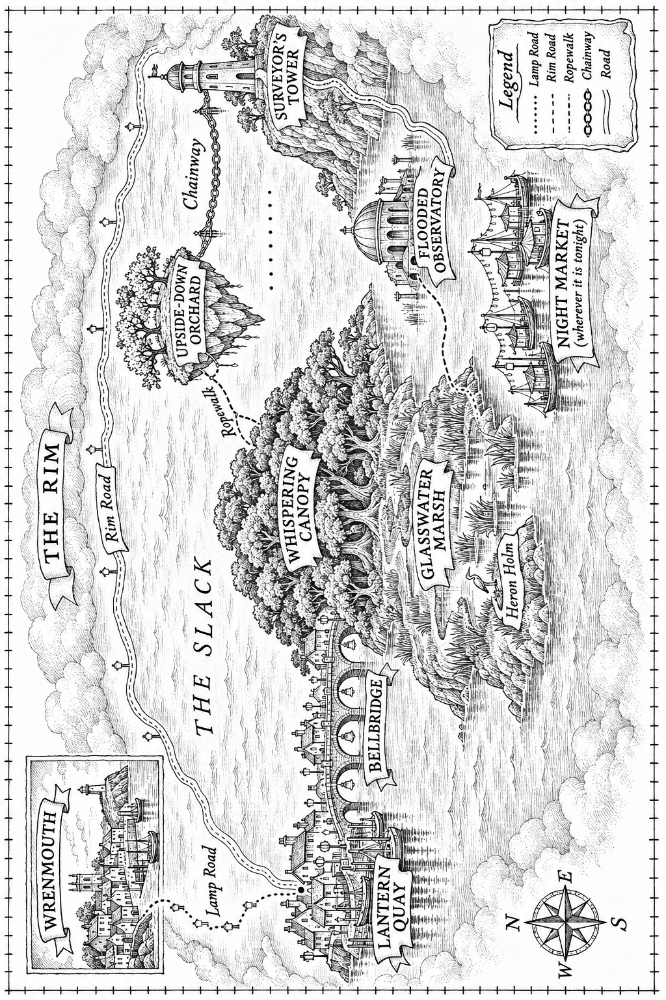
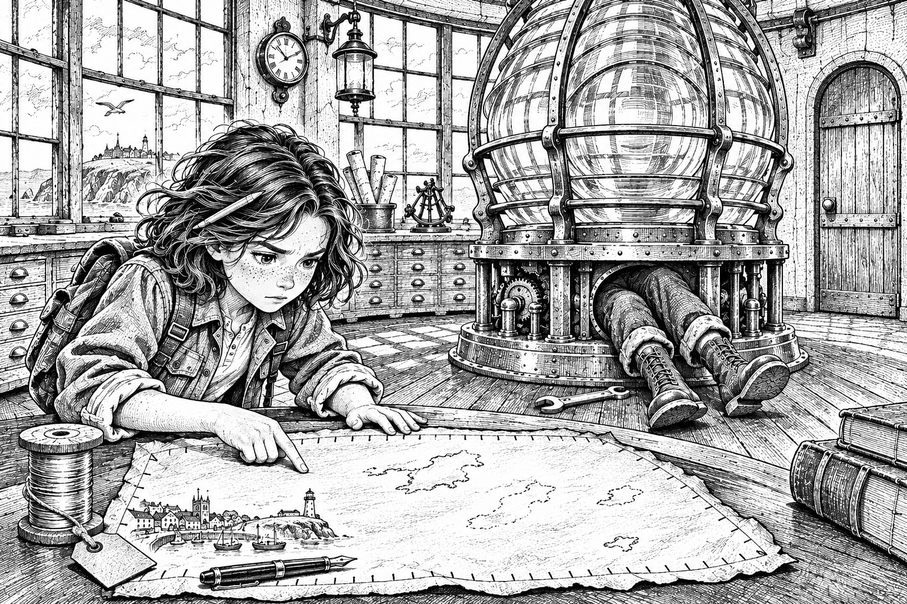
There were four islands outside Wrenmouth harbour that had not been there at lunchtime.
Mara Ellery checked the window. Grey sea. Grey October sky. The harbour wall curled round the fishing boats like an arm. No islands.
She looked back down at the map.
Four islands, plain as anything, just beyond the harbour mouth. They were drawn in a brownish-green ink so fresh that it shone. While she watched, a fifth began to appear: first a wobbly outline, as if an invisible pen were feeling its way, then a fringe of tiny houses, then a name in letters so small she had to bend until her nose nearly touched the paper.
Lantern Quay.
“That,” said Mara, “is not allowed.”
Maps had rules. A map was supposed to tell you the truth about where things were, and keep telling you, and not add islands when your back was turned.
Twenty minutes ago, it had just been the best thing she had ever found.
Mara had spent the first Friday of half-term in the Gull Head lighthouse with a clipboard and a pencil behind each ear. The lighthouse was being turned into a museum, and Mrs Bello, whose firm was mending the roof, had said Mara could help if she kept out from under the ladders. So Mara had made a plan of the whole building. Every room. Every cupboard. A hundred and eight steps from the front door to the lamp room, counted three times.
The lamp room was the best part. A great glass lens stood in the middle like a beehive made of ice, and round the walls ran a curved wooden table with wide, flat drawers for maps. All the drawers were empty except the bottom one, which was stuck. Mara hadn’t yanked it. Yanking was how things got broken. She’d slid her ruler along the gap until it found a little brass catch, and pressed, and the drawer had sighed open.
Inside were three things.
A spool of silver thread, with a brown label tied to it in spiky handwriting: Mends what’s broken. Not what’s lost. E.M.
A fountain pen, its nib crusted with dried ink the colour of seaweed.
And the map.
In one corner of it, drawn in faded black ink, was Wrenmouth. Her Wrenmouth: the harbour, Fore Street climbing the hill, St Wenna’s church, the lighthouse with tiny rays round the top. Someone had even drawn a little fish over the building where Ellery’s Fish and Chips was now, and Mara had laughed out loud. The rest of the paper was empty sea, washed pale blue-grey. Round the edge ran a border of tiny marks, neat as stitches. Mara had counted them, because she counted things. Seventy-two.
She’d been copying the fish onto a sticky note for Nan when the first island appeared.
Nan had come to live with them in April, and the flat above the shop still muddled her. So Mara drew maps. A yellow square on the bathroom door: a toothbrush and an arrow. One on the fridge: KETTLE, 2ND CUPBOARD. Nan said they were the best maps in the world. Some days she said it twice, because she’d forgotten saying it the first time.
Mara didn’t mind. Mostly.
On the far side of the lens, something went clunk.
“Your mum said not to touch that,” said Mara, without looking up.
“I’m not touching it.” Idris Bello’s voice came from inside the brass frame. “I’m investigating it.”
“With a spanner.”
“With an investigating spanner.”
Idris was eleven and had lived in Wrenmouth since July, which was not long enough to learn that you didn’t call people Clipboard. He’d done it twice yesterday. Mara hadn’t called him anything back, which showed she was the better person.
On the map, something new was happening. A thin green-brown line was creeping over Edie’s black ones: along Fore Street, round the harbour. Checking them, Mara thought, the way a teacher goes over your homework. But it didn’t stop where the black lines stopped. It drew Kestrel Rise, where the new houses were, and the skate park. Those hadn’t been built when this map was made.
Mara remembered the men in August. Three of them, in long grey coats, measuring the harbour with brass chains that clinked like money. Dad had said they were from the council.
Then a new line ran out from the lighthouse, from this very room, across the harbour mouth to the islands. Fine and straight, like a torch beam drawn in ink. Letters appeared beside it.
Lamp Road.
Mara made a tiny pencil dot in the margin and watched it. It just sat there, grey and ordinary. It didn’t shine.
So it wasn’t the paper. It was the ink.
Down in the town, St Wenna’s clock struck four. On the fourth stroke, one of the stitch-marks in the border went pale, like breath fading off a window, and was gone.
She counted. Seventy-one.
“Idris,” she said. “Come here. Please.”
It was the please that did it. He slid out of the lens frame with oil on his cheek, ready to be unimpressed. Then he saw the map.
“Is it a screen?”
“It’s paper. It’s old. And it’s... doing things.”
She showed him everything, in order, the way you’d explain a plan. For once he didn’t say anything clever. He just pointed at the bottom of the map.
Along the margin, in faint pencil, someone had written a line. Most of it was hidden under a brown water stain. Mara could only read the start, If the marks begin to fade, he has, and, at the very end, the letter E.
“Who’s he?” said Idris.
Before she could answer, the Wren Road changed.
It was the only proper road out of Wrenmouth: over the river on the old stone bridge, then up onto the moor. Now, where it crossed the bridge, the shining line went grey, as if someone had rubbed it with a thumb. The grey spread, and faded. Underneath, Edie’s old black line stayed exactly where it was, as if nothing had happened.
“Um,” said a voice from the stairs.
Bea Nowak stood on the top step with binoculars round her neck and her long black hair blown across her face. She was in Mara’s class. She hardly ever spoke, and when she did, it was so quietly that Mr Penrose said, “Pardon?” and Bea didn’t say it again.
“Sorry,” said Bea. “I was doing the kittiwake count. Only... there’s fog on the bridge. Just on the bridge.”
Mara and Idris went to the window.
Below them lay Wrenmouth in the afternoon light. And across the old stone bridge, where cars should have been crawling home for tea, sat one thick bank of white fog. Nowhere else in the whole valley was there so much as a wisp.
Mara looked from the window to the map and back again.
The grey road and the white fog were exactly the same shape.
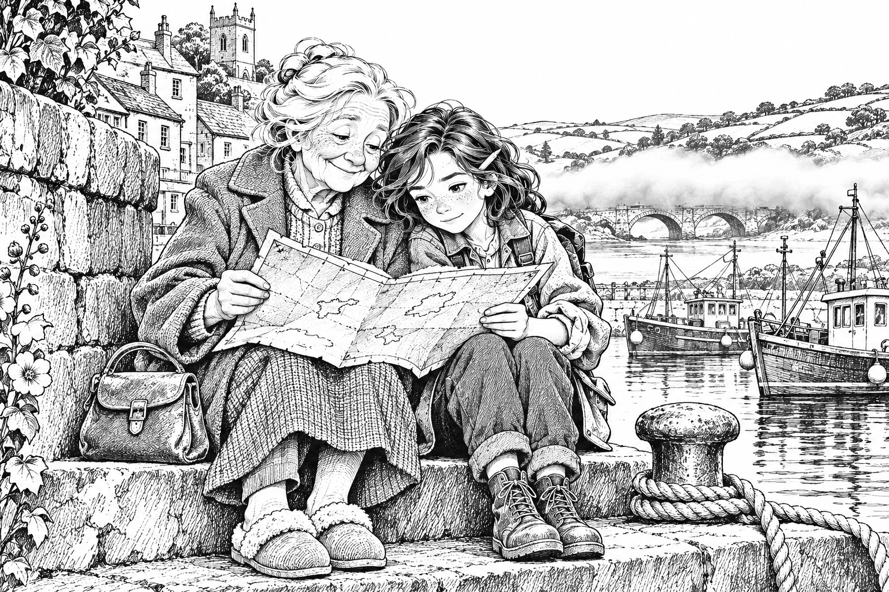
Mara ran down all hundred and eight steps with the map buttoned inside her jacket.
In the yard, Mrs Bello was on the phone. “Shut by what? It’s fog, not a wall!”
“Going home for tea!” Mara called. Idris had followed her to the door. He was frowning up at the lamp room, turning his spanner over.
“It said Lamp Road,” he said. “This is a lamp.”
“Don’t touch it.”
“I’m only thinking about it.”
That, thought Mara, running down the headland path, was exactly what worried her.
Ellery’s had a queue out of the door, the way it always did on a Friday. The radio crackled: “...sudden fog closing the road at Wren Bridge...”
Dad was at the fryers, red-faced from the steam. Nan’s chair by the till was empty.
“Mara! Is Nan with you?”
Mara’s stomach dropped. “No.”
“She was right there. I turned my back for five minutes...” Dad tore off his apron. “She went up Church Hill last time.”
“I’ll do the harbour,” said Mara.
“Ten minutes,” Dad shouted. “Then I’m phoning...”
At the end of the sea front, Mara made herself stop and think. Nan didn’t wander about at random. All week she’d been saying the same thing, in her happy voice: I’m meeting Edie at the Palace.
There was no Palace in Wrenmouth. Not for years.
Mara opened the map against the railings. She ignored the shining lines and looked at the old black ones underneath. There, where the harbour car park was now, was a little building with columns and a name in curly letters. The Palace.
Nan wasn’t lost. She was going somewhere that wasn’t there any more.
Mara ran Nan’s old way: down Fore Street, through the Ropery Steps, out by the harbour. The car park was full of cars and gulls. No Nan.
She looked at the map again. The Palace’s door, a tiny arch, opened onto the stone steps at the end of the harbour wall. You came out of the dance, Nan always said, and you could smell the sea.
And there was Nan, on the top step, in her good blue coat and pink slippers, with her handbag on her knee, watching the lighthouse.
“Nan.” Mara sat down close beside her. “It’s me.”
Nan looked at her for a long moment, like someone trying to find the right drawer. Then she smiled. “Mara. You’ve got your grandad’s frown on.”
Mara could have cried. She didn’t. “Nan, your friend Edie. What was her other name?”
“Edie Marrow,” said Nan, the way you’d say the name of a song you loved.
E.M. Mara held out the map. “Is this hers?”
Nan smoothed it on her lap. Her finger stopped at the little fish, and she laughed. “That’s Edie’s hand. She drew us that for a joke. Best chips this side of anywhere.”
“There’s writing at the bottom. I can’t read it.”
“Pencil?” Nan tutted. “You don’t look at pencil, love. You tilt it.” She tipped the map towards the sky, and the faint grey letters under the stain caught the light and shone. Mara read them aloud.
If the marks begin to fade, he has begun the Stilling. When the last is gone, everything on his Chart will be still. For ever. Go by the Lamp Road to Lantern Quay and ask for the Lamplighters. And remember: he only holds what he has drawn. E.
Mara felt cold all the way down.
“Edie used to say a funny thing,” said Nan. “She’d draw a ring round a rock pool, or a sandcastle, and she’d always leave a little gap. Never draw a line all the way round, Dot. Leave a gap for the wanderers.” She smiled. “I never knew what she meant.”
Mara looked up the valley. Now there was fog on the cliff road too, and where the railway went round the hill. On the map, three roads had gone grey. And a new line of tiny scalloped marks was drawing itself round Wrenmouth, like a fence going up round a field.
The town was on his Chart. The harbour. The shop. Dad. Nan. All of it, still, for ever. Like a photo you could never step out of.
And for one terrible second, a small thought crept in. Nan would never get any worse.
Mara squashed it flat. She stood up and held out her hand. “Come on, Nan. Dad’s doing his worried face.”
Dad met them on Fore Street and hugged Nan so hard she said, “Tom, my hair.” Back in the shop, the phone was ringing, the queue was out of the door, and the radio said the trains had stopped.
“Dad, the roads...” Mara began.
“I know, love. Fog.” He was back at the fryers. “Can it wait? Please?”
She looked at his tired, frightened face, and couldn’t find the words that would make him listen.
So she took Nan upstairs, made her a fresh tea, and stuck a new sticky-note map on the bathroom door, exactly at Nan’s eye height. Then she wrote a note on a page from her sketchbook.
She tucked it under the till, where Dad always looked when he cashed up. She packed her backpack: sketchbook, pencils, sticky notes, water, and the big yellow torch from under the sink. The thread and the dry pen went in her pocket.
“Going back up to help Mrs Bello?” Dad called. He pushed a warm paper parcel into her hands without looking. “Chips for Funmi and the lad. Back by half six.”
Mara nodded, because if she said anything, she’d say all of it.
It was nearly dark when she reached Gull Head. Mrs Bello’s van had gone. And above her, for the first time in Mara’s whole life, the lighthouse was lit.
She climbed the stairs into warmth and the smell of paraffin. Idris stood by the turning lens, looking like someone who has done something brilliant and is just starting to wonder if it was also a mistake.
“There was paraffin in the store,” he said quickly. “And the clockwork only needed winding.”
“You lit a lighthouse.”
“It’s really well made,” said Idris.
Bea was there too, at the window. She said something.
“What?” said Mara.
Bea said it again, a little louder. “The kittiwakes. They’ve gone slow.”
Mara looked. Over the harbour, the gulls were flying the way they always did, only slowly, like birds in a dream. The chimney smoke on Fore Street hardly moved.
Mara pulled out the map. The fence of marks round Wrenmouth was finished. And the Lamp Road was glowing, warm and gold, keeping time with the turning lamp.
There were two doors in the lamp room. One led to the stairs. The other led out onto the gallery round the outside of the light. Mara had written on her plan that morning: Gallery door. Rusty. Do not open.
She walked to it with the map in her hand.
“Mara,” said Idris. “What are you doing?”
“I don’t know,” she said, and that frightened her more than anything. She had no plan. She only had the note, and the gulls, and who was in the town under them.
She opened the door.
There was no gallery. No railing, no drop to the rocks. Instead, a road of golden light ran out from the doorstep, as wide as a pavement, across a sea that wasn’t the sea: flat and silver, with mist lying on it. At the far end, under a plum-coloured sky, a harbour glittered with hundreds of lamps. Somewhere, faintly, bells were ringing.
“I lit it,” said Idris, in a funny voice. “So I’m coming.”
“It might not be safe.”
“Then you definitely shouldn’t go by yourself.”
Behind them, Bea said, “Look.”
She said it quietly. But this time they both heard.
Over the harbour, a single gull hung in the air with its wings spread wide. Not gliding. Not falling. Just there, like a paper bird pinned to the sky.
Mara stepped onto the road. It was warm through her shoes, and it hummed, like standing on a piano while someone held down a note. Idris stepped out after her.
Bea looked back at the town for a long moment. Then she took hold of Mara’s sleeve, tight, and came too.
The door swung shut behind them. At the edge of the map, one more stitch-mark faded.
SEVENTY HOURS REMAINING
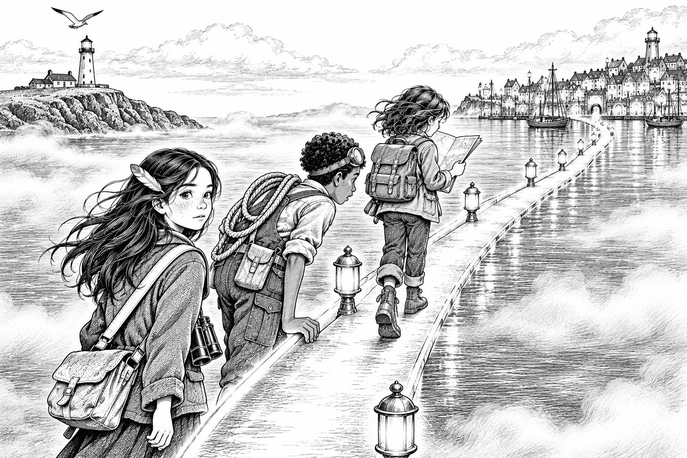
The road hummed all the way across.
On either side lay the silver sea. It looked like water but didn’t splash. It looked like cloud but had a surface, smooth as a pond. Very slowly, the whole of it rose and fell, as if something enormous underneath were breathing in its sleep.
“Don’t look down,” said Idris, looking down.
“I wasn’t.”
“I was talking to me.”
Mara counted steps, because counting things helped when the world got too big. At four hundred and twelve, she stopped and unfolded the map.
On the glowing Lamp Road were three tiny specks of light. While she watched, they crept forward. She took a step. They moved.
“That’s us,” she said.
“We’re on the map?” said Idris.
“We’re on the road. And the road’s on the map.” On the islands ahead, she could see other specks, crawling along the roads between places like ants. “It shows people travelling.”
“So someone could watch us,” said Bea.
Nobody said anything for a while after that.
When Mara looked back, the lighthouse was small and far away. A gull still hung over it, not moving. The lamp’s beam seemed stuck in the sky. Then she was almost sure it had crept a finger’s width since they’d set out.
“It’s like the town is holding its breath,” said Bea.
Mara was holding Dad’s chip parcel tightly. She thought about the note under the till, and decided not to think about it.
“Who’s hungry?” she said.
They ate the chips walking along a road of light over a breathing sea. They were hot and salty, with plenty of vinegar soaked into the bottom.
“Best chips I’ve ever had in my life,” said Idris.
“It’s because we’re scared,” said Bea.
“It’s because my dad’s brilliant,” said Mara.
Idris folded the empty paper and put it in his pocket. “We should’ve told a grown-up,” he said. “Your dad...”
“I tried,” said Mara, sharper than she meant to. Idris shut his mouth, and they walked on in a different kind of silence.
Lantern Quay was a harbour made of lamps.
Lamps on poles, lamps strung between houses, lamps in every window and on every boat. Brass lamps, paper lamps, green and blue glass lamps, and one enormous lamp in a tower at the end of the harbour wall, the same gold as the road. Lamplighters climbed ladders to trim the wicks, and some strode about on stilts. Everyone was carrying a light. It smelled of lamp oil, fried fish and seaweed.
At the top of the stone steps stood a boy with copper curls stuffed under a floppy blue cap, a brown scarf wound up to his freckled nose, and a smudge of soot on one cheek. He held a long pole with a hook on the end and a little tin lantern hanging from it.
“The Lamp Road’s been dead for years,” he said. “Who are you? And what’s that smell?”
“Chips,” said Idris.
“What’s a chips?”
“Fried potato. In paper.”
The boy thought about this. “In paper,” he said. “Genius.” Then he remembered to look stern. “I’m in charge of this end. State your business.”
“Are you in charge?” said Bea.
He opened his mouth. Closed it. “Basically,” he said.
Mara didn’t have time for basically. She held up the map.
“There’s a man called the Surveyor,” she said. “He’s started something called the Stilling. My town is on his Chart and it’s slowing down, and in seventy hours it’s going to stop for ever. This is Edie Marrow’s map. It says ask for the Lamplighters. So please take us to whoever is actually in charge.”
The cleverness went right out of the boy’s face.
“Edie Marrow’s,” he said. “Her real one.” He swallowed. “I’m Tavi. Come on. And don’t let anyone see that.”
✦ ✦ ✦
Ro Sallow, the Head Lamplighter, was halfway up the inside of the great lamp tower, trimming a wick as long as Mara’s arm. She was tall and grey-haired, with arms like ship’s ropes and a face that hadn’t slept for a week. She came down, looked at the map for a long time, and then at Mara.
“Is Edie with you?”
“Edie died,” said Mara. “When I was four. My nan was her friend.”
Ro shut her eyes for a moment. “I wondered,” she said, “when the road went dark.” She sat down on a crate. “Tavi, put the kettle on.”
“But...”
“Kettle, Tavi.”
The Stilling had started at three o’clock that afternoon, Ro told them. The Surveyor had nailed notices all over the Fold. She handed Mara one.
“What does still mean?” said Idris. “Actually?”
“Stopped,” said Ro. “Every island on his Chart. Every person on them. Not dead. Just fixed, in one moment, inside his map. For ever.”
“But why’s my town on it?” said Mara.
Ro tapped the Lamp Road. “Because of this. Edie built this road, years ago, between her lamp and mine. It was never on his Chart. But this summer, someone found it, and he drew it in. And a road on his Chart has to end somewhere on his Chart. So he drew the other end too.” She looked at Mara. “Your town.”
Mara thought about the men with the brass chains.
“It’s slowing down,” said Bea. “Our town.”
“New places sink into his Chart slowly, like a stone into honey,” said Ro. “Our islands will stop all at once, at the end. Yours is sinking already. By Monday, your people will have lived about an hour. They won’t feel a thing.”
“Then we have to stop him,” said Mara.
Tavi came back with four mugs of smoky tea and didn’t make a single joke.
“What you have to do,” said Ro, “is go home. While my lamp’s lit, and yours is too, the road stays open. Go back to your families.”
“My family’s on his Chart,” said Mara.
“So’s everyone’s.” Ro rubbed her face. “Do you think I wouldn’t go? If my lamp goes out, your road home goes with it. I’m one of only two people left who can climb that ladder. I can’t leave it. Not for an hour.”
“Then tell us how to stop him,” said Mara. Her voice wobbled. She didn’t let it fall.
Across the water, bells began to ring.
Seven slow notes, each one left to fade before the next. Out on the quay, everyone stopped talking and turned to face the east.
“The lost-road toll,” whispered Tavi. “Bellbridge rings it when a way is gone.”
Mara spread the map on her knees. Far to the east, a line between a tall, thin tower and a domed building half in water was turning grey. As she watched, it thinned to nothing.
“He’s started closing the roads,” said Ro.
“Then we can’t wait till morning,” said Mara.
“You can’t cross Bellbridge till first bell. They lock the gates at dark.” Ro stood up and took a tin box down from a shelf. Inside was an old yellow envelope addressed in spiky handwriting.
“I can’t tell you how to stop him,” said Ro. “But Edie might.” She held out her other hand. “Tavi. Fetch your lantern.”
“It has to be dark,” said Tavi. “Properly dark. Not shady.”
Ro took them into the oil store at the bottom of the tower and shut the door. Tavi closed the shutter on his lantern until only a thread of light showed, and held it close to Edie’s letter.
“Things remember sounds,” he whispered. “Just the loudest bit. The bit that mattered. The lantern lets them say it, once.” He tapped the fat candle inside. It had six marks on it, like a ruler. “Each echo burns one mark. And you can’t ask the same thing twice. So nobody sneeze.”
The light flickered.
Then a woman’s voice filled the dark: dry, quick and amused, so close that Mara jumped.
“...and if he ever begins it, Ro, the answer’s where he and I learned our letters. Under the water, behind the stars. And Ro, don’t let anyone draw the last line. Not him. Not anyone.”
The voice stopped. The candle had burned past its first mark.
When Ro opened the door, she was wiping her eyes with the back of her wrist. “Well,” she said. “That’s Edie. Never once said a thing straight.”
✦ ✦ ✦
Supper was fish stew with lumps of something called fogcake, which Idris said tasted like a fried cloud. Bea opened a battered tin she’d had in her pocket all along and shared out flapjack. It was the best thing anyone had eaten since the chips.
Mara laid the map on the table and asked her questions in order.
Why had the map been blank, apart from Wrenmouth?
“Edie cut it loose,” said Ro. “A copy like that is tied to his Chart. What’s on his shows on yours. But if a copy’s left blank long enough, he can’t see through it. Edie let it go empty, so he could never look. Then he drew her road onto his Chart, and her map was joined to his again. So it filled up.”
What was the pen?
Ro sniffed the dried nib. “Tide-ink. Long dry.” She looked at Mara hard. “Listen. Never put tide-ink on that map. It doesn’t stay on the copy. It goes to him. Whatever you draw, he gets.”
Mara wrote it down and underlined it twice.
Why hadn’t he started the Stilling before?
“I don’t know,” said Ro slowly. “Forty years he’s talked about keeping everyone safe. Forty years, nothing. Then this summer his Chainmen find Edie’s road, and three months later, he begins.” She shook her head. “Edie knew something.”
She pinned the Surveyor’s schedule to the table, and Mara copied it.
“He tells everyone when,” said Bea, surprised.
“He doesn’t want anyone caught between places,” said Ro. “He thinks that’s kind.”
Then Ro showed them the map. Lantern Quay. Bellbridge, running east to the big middle island. The Whispering Canopy in the north of it, Glasswater Marsh in the south. The Upside-Down Orchard floating in the north-east. And far away on the eastern edge, tall and thin, the Surveyor’s Tower.
“Under the water,” said Idris, tapping a dome half-sunk in a lagoon. “The Flooded Observatory. Has to be.”
Mara bent closer. Just below the Observatory, the corner of the map was missing, torn clean away.
“Maybe,” she said.
“Maybe? It’s flooded!”
“The marsh is under water too. And what does behind the stars mean?” Her voice went tight. “If we go all that way and it’s wrong, we’ve wasted a whole day. Is there anyone who knew Edie and the Surveyor when they were learning?”
“Amma Oduya,” said Tavi at once. “At the Orchard. She’s the oldest person in the Fold. She knows everyone’s business.”
“Then we ask her first,” said Mara. “Then we know for sure.”
“We could be at the Observatory by lunchtime,” said Idris.
“And if it’s wrong, we’d be stuck at the bottom of the map with the roads closing behind us. We need to be sure.”
“Orchard’s a good idea,” said Tavi, a bit too quickly. “Amma Oduya sells to the Night Market. She hears things.” He didn’t look at anyone.
Bea looked at Idris’s finger on the map. She opened her mouth, and closed it again.
“Two against one,” said Mara.
“Bea didn’t vote,” said Idris. Bea looked down at her stew.
Ro sighed. “Tavi goes with you. He knows the customs. Tavi, no showing off.”
“Me?” said Tavi, in the voice of someone who’d been hoping for exactly this. “Oh, fine.”
✦ ✦ ✦
When Ro went to make cocoa, Idris picked up her teapot. It was fat and brown, with a crack down the spout. He looked at the silver thread on the table.
“Idris...”
He’d already wound it round the spout, neat and tight. The thread glowed. When he unwound it, the crack was gone, as if the teapot had never been dropped.
“Mends what’s broken,” he grinned. “Ro’s been good to us.”
Mara grabbed the spool and measured it with her ruler. In the lighthouse it had been two hundred centimetres. Now it was a hundred and eighty.
“That’s not ours to waste,” she said. “We might need it for something important. You never think.”
“And you never stop thinking,” said Idris, and went outside.
Ro came back, looked at the teapot, and said nothing. But she poured Idris’s cocoa first, from the mended spout. It didn’t dribble.
✦ ✦ ✦
They slept in hammocks in the tower. Bea wrote on one of Mara’s sticky notes in tiny letters: Mum, Jo, Kit. I’m all right. I’m sorry. She folded it small and put it in her flapjack tin.
“You can’t send it,” whispered Mara.
“I know,” said Bea. “I just wanted it to exist.”
Mara couldn’t sleep. Near midnight she climbed to the top of the tower with the map. Ro was there, trimming the great wick.
Below, a fishing boat was leaving the harbour. On the map, its speck slid along the dotted ferry line. Then the boat turned off the line, out into the open silver. Through the window, Mara could still see its lamp bobbing on the water, clear as anything.
On the map, its speck had gone.
She wrote in her sketchbook: Off the road = not on the map?
“Can’t sleep?” said Ro.
“Everywhere’s so bright here.”
Ro smiled and pointed straight down over the rail. All around the tower, the quay blazed with light. But right at the bottom of the tower, where its own shadow fell, there was a pool of black.
“Lamplighters’ saying,” said Ro. “It’s always darkest under the lamp. Go to bed, Mara.”
✦ ✦ ✦
At a quarter to six, in the grey before dawn, they walked to the gates of Bellbridge. Mara had the map buttoned inside her jacket. Idris had his tool roll across his chest and Mrs Bello’s blue rope over his shoulder. Bea had her binoculars, and Tavi had his lantern swinging from its pole.
The gate was still locked. Beside it waited a man in a long grey coat, with brass chain links on his belt that clinked when he turned his head.
“Chainman,” breathed Tavi.
The man smiled politely, and looked straight at Mara’s jacket, as if he could see right through the buttons.
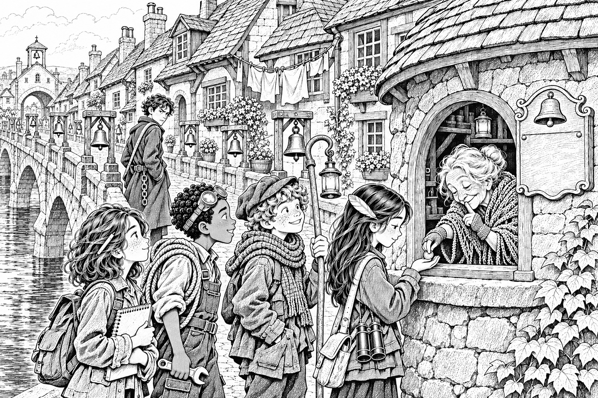
At six o’clock exactly, a bell rang somewhere above them, and the gates of Bellbridge swung open.
The Chainman stepped aside to let them through. Close up, he was younger than Mara had thought, not much more than a big boy, with a long grey coat and a polite, worried face.
“Early travellers,” he said. “Where to?”
“Visiting,” said Tavi quickly.
“Visit quickly, then.” The Chainman tapped a paper nailed to the gatepost. It was the same schedule Mara had copied the night before. Bellbridge: Sunday, twelve noon. “Tomorrow, this bridge is gone. Be home.”
Bellbridge was not just a bridge. It was a street.
Little houses lined both sides of it, leaning together over the cobbles like old friends sharing a secret. There were window boxes full of herbs, washing lines strung from roof to roof, and a cat asleep on a step. Below, through gaps between the houses, Mara could see the silver Slack breathing slowly in and out.
And there were bells. They hung in little wooden frames along the rails, from a great black one as big as a dustbin to a tiny silver one no bigger than an egg cup. Ropes ran from every bell along the bridge, back to a small round tollhouse by the gate.
On the tollhouse wall was a painted board.
“Xylophone?” said Idris.
“The founders ran out of X words,” said Tavi. “Everyone knows that.”
In the tollhouse window sat the smallest, oldest woman Mara had ever seen. She had a shawl, fingerless gloves and eyes like two black buttons.
“Toll’s a copper each,” she said. “Tell me who you’re visiting and I’ll ring them for you.”
People were coming out of the little houses now, carrying bags and boxes, children on their shoulders, heading west towards the Quay. Someone was crying quietly. A man was taking down his window box.
Tavi paid four coppers from the purse Ro had given him. Then, with half the bridge listening, he stood up straight and said, “We’re on important business. Very important. We carry Edie Marrow’s own map.”
There was a silence.
Mara felt her whole face go hot. Behind them, by the gate, the young Chainman had turned his head.
“Edie Marrow’s?” said the old woman. Her button eyes moved, very slightly, towards the Chainman and back. “Well. Every child gets a token, for your counting.” She pushed a little round metal disc across the sill into Bea’s hand. “Off you go. Don’t dawdle.”
They walked fast, not talking. Halfway across, Mara grabbed Tavi’s scarf.
“Why did you say that?”
“I was...” Tavi’s ears were red. “They were all looking so sad. I wanted them to know someone was doing something.”
“Now he knows.”
Tavi looked back. The Chainman was not watching them any more. He was standing on the tollhouse roof, holding up something that flashed: a small round mirror, catching the first sun. Flash. Flash-flash. He was pointing it east.
“Signal mirror,” said Tavi in a very small voice. “Chainmen pass messages that way. Tower to tower. He’s telling the Surveyor.”
Nobody said anything for a long moment.
“It’s not a toll,” said Bea.
They all looked at her. She held up the little disc. It was stamped on both sides with numbers and dots.
“A toll token would say how much you paid,” Bea said. “This doesn’t. And she looked at the Chainman before she gave it to me.”
Mara took it. On the front:
6 · 15 · 12 · 12 · 15 · 23 2 · 5 · 5 · 19
On the back:
8 · 9 · 4 · 5 13 · 1 · 16
“Numbers up to twenty-six,” Mara said slowly. “There are twenty-six bells.”
“And they go in alphabet order,” said Tavi. “Anchor, Barley, Candle. Everyone learns them as babies.”
Mara already had her pencil out. Six: Fern, F. Fifteen: Oar, O. Twelve: Lark, L. Twelve again. Fifteen. Twenty-three: Wren, W.
“F-O-L-L-O-W,” she read. Then two, five, five, nineteen. “B-E-E-S. Follow bees.”
She turned it over. Eight, nine, four, five. Thirteen, one, sixteen.
“Hide map,” said Bea.
Mara looked back down the bridge. The tiny old woman was still sitting in her window, ringing a bell for a family who were leaving. She didn’t look their way.
“She warned us,” Mara said. “In front of him. And he didn’t even notice.”
“Follow bees,” said Idris. “What bees?”
“We’re going to the Canopy next,” said Tavi. “The Canopy has bees. Lots.” He swallowed. “Mara. I’m sorry. About the map.”
She wanted to stay cross. It would have been easier. But she remembered the people carrying their boxes, and his red ears, and how he’d only wanted somebody to have hope.
“Just don’t do it again,” she said, and buttoned the map deeper into her jacket.
They reached the eastern end at half past seven. Behind them, Bellbridge stretched back across the silver water, all its little houses and its twenty-six bells. Mara turned to look at it, because she was a person who looked at things properly.
Afterwards, she was glad she had.
On the map, four tiny specks stepped off the end of the bridge and into the trees. And somewhere far to the east, a tall, thin tower knew exactly where they were.
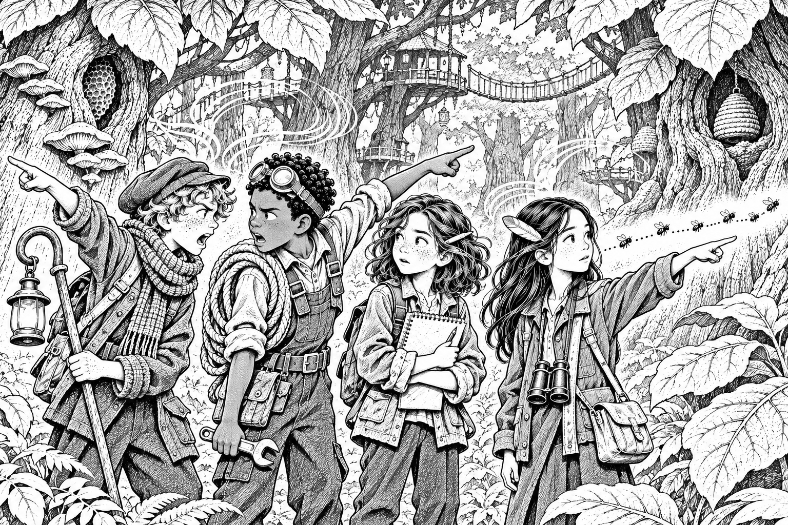
The trees of the Canopy were enormous. Their trunks were wider than Ellery’s shop, and their leaves were as big as dinner plates. They rustled all the time, even when there was no wind, with a sound like a crowd of people whispering behind their hands.
“Never shout in the Canopy,” said Tavi. “It’s rude. And it doesn’t help.”
“Why not?” said Idris, and his voice came back to them from somewhere up and to the left, in a slightly different order: “Not why?”
Idris shut his mouth fast.
“The leaves bend sound,” said Tavi. “Voices come out of the wrong places. Sometimes they come out a minute later. Stay close.”
Mara opened the map. Then she groaned.
The path from Bellbridge to the middle of the Canopy was right under the brown water stain. She could see where it started, and she could see a clearing marked Listeners’ Hollow on the far side, but the middle was just a blur.
“I know the way,” said Tavi. “Ro brought me once.”
“When?”
“Ages ago. It’s easy. Follow me.”
They followed him. For a while there was a path, and on the map their four specks crept along it. Then the path split three ways. Tavi chose one. Then it split again. Tavi chose again, a bit more slowly.
“Tavi,” said Mara. “Have you actually been here?”
“Yes.” A pause. “Nearly.”
Mara looked down at the map. Their four specks had gone.
“We’re off the path,” she said. “We’ve disappeared.”
“Disappeared from what?” said Idris.
“From the map. When we’re on a proper road, it shows us. Now it doesn’t.” She remembered the fishing boat and her pencil note. Off the road = not on the map. “So at least the Tower can’t see us,” she added, but it didn’t feel much better.
“I can find the path,” said Tavi. He unhooked his lantern. “It’s shady here. If I hold this to that tree, maybe it’ll remember people walking past...”
“Tavi, it has to be properly...”
He’d already opened the shutter. The candle flared. All that came out of the lantern was a soft hiss, like a radio between stations, and then nothing at all.
Tavi stared at the candle. It had burned down past its second mark.
“Not dark enough,” he said. “I know that. I don’t know why I did it.”
“Because you didn’t want to say you were lost,” said Mara, and immediately wished she hadn’t. Tavi’s face closed up like a shop shutter.
Then the voices started.
“This way!” called someone, from the right. “Over here!” from behind. “Mara!” in Idris’s voice, though Idris was standing right next to her with his mouth shut.
“Echoes,” said Tavi. “Ignore them.”
“How do we ignore them when we don’t know which ones are real?” said Idris. “We should go towards the light. That way’s brighter.”
“No, the moss grows on the north side, so...”
“That’s our world, this place might be different...”
They argued. Mara tried to make a plan and couldn’t, because she couldn’t see where they were. The voices kept calling. They walked one way for ten minutes, then turned back. They walked another way. The trees all looked the same.
Bea said nothing.
Bea had been watching the bees since the first big tree. They came out of nowhere and went straight past, never wandering like bees at home, always in the same line, like beads on a thread. A bee went past her ear. Then another. Same line. She thought, Follow bees. She thought it again. She opened her mouth.
“...and if we just went up, I could climb...”
“...you’re not climbing anything, you’ll break your neck...”
She closed her mouth.
Time passed. Mara checked her watch. They had been lost for an hour and a half. She felt sick. It was her plan that had brought them here. She had been so sure.
“Excuse me,” said Bea.
Nobody heard.
Bea took a breath that went all the way down to her boots.
“Excuse me,” she said, out loud, in a voice that was nearly as big as other people’s. “The bees.”
They all turned and looked at her. Behind her, very faint, the trees whispered: the bees, the bees.
“They don’t wander,” said Bea. Her cheeks were pink, but she kept going. “They’ve been going past in a straight line all morning. Always the same way. The token said follow bees. Bees go home. And where there are bees, there’s someone who keeps them.”
Idris looked at the line of bees. He jumped, caught a low branch, pulled himself up and looked along it. “She’s right,” he called down. “There’s a straight line of them. Like a road in the air.”
Mara felt something unknot inside her. “How long have you known?” she asked Bea.
Bea looked at her boots. “Since the first tree.”
Nobody said, Why didn’t you say? Mara thought about all the times she had talked over people because she was so sure, and kept quiet.
They followed the bees.
The line led them between the great trunks, under ferns, across a stream, and up a slope. The whispering faded. At eleven o’clock the trees opened into a round clearing, full of sun, with wooden platforms and ladders built high in the branches. And everywhere, humming in hollow trunks and straw domes and painted boxes, were hives.
On the map, a soft dot appeared. Listeners’ Hollow.
“Bea,” said Idris, “you’re a genius.”
Bea went pinker and smiled at the ground.
Somebody waved at them from a high platform: an old person in a gauze veil, with a slate hanging round their neck. They wrote on it with chalk and held it up.
WELCOME. QUIETLY, PLEASE.
Then the old person pointed past them, south, over the tops of the trees.
Far off, over where the map said Glasswater Marsh, a long grey smudge of smoke was rising into the sky.
The old beekeeper’s name was Moss Haverly. Moss climbed down a ladder faster than Mara would have believed and gave them honey bread, thick and warm, dripping gold.
In the Canopy, Tavi explained, people talked by slate and hand-signs, because voices wandered off. Moss’s hands were quick and crinkled. Tavi translated as best he could, and when he couldn’t, Moss wrote.
SMOKE IS CHAINMEN. BURNING REED PATHS IN THE MARSH. ALL NIGHT.
“Reed paths?” said Mara.
“The marsh people walk on paths made of bundled reeds,” said Tavi. “They make new ones every spring. They aren’t on any map.”
Moss wrote again, and underlined it.
HE NEVER CARED ABOUT REEDS BEFORE. WHY NOW?
Mara didn’t know. But she wrote it in her sketchbook, with a question mark.
At twelve o’clock, she opened the map on the platform to check the time. All four of them saw it happen.
The Glasswater Causeway, the stone road from Bellbridge’s end down into the marsh, began to change colour. First its brown-green ink went pale, like tea with too much milk. Then grey. Then thin, like a pencil line nearly rubbed out.
“Where is it?” said Idris. “Really?”
Moss pointed south. From the top platform, through Bea’s binoculars, they could just see it: a long line of flat stones crossing the reeds. As the minutes went by, the stones began to sink. Not all at once. Slowly, the way snow melts. A heron that had been standing on one flapped away crossly.
By one o’clock, there was no causeway, only flat water and reeds.
“An hour,” said Mara quietly. “It takes an hour. Just like the notice said.”
“That’s the way we’d have gone,” said Idris. He didn’t say it nastily. He just said it. “To the Observatory. If we’d gone straight.”
Mara looked at the empty place on the map and didn’t answer, because there wasn’t anything to say.
Tavi, to everyone’s surprise, was the one who changed the subject.
“Do you want a story?” he said. “Story-for-bread. It’s a custom. You eat someone’s bread, you pay them a story.”
Moss nodded hard and sat down to listen.
“Long ago,” Tavi began, and his voice went different, slower and warmer, as if he’d done this a hundred times, "before there were any maps, the islands of the Fold drifted wherever they liked. People got lost all the time. So the very first Chartmaker made the very first Chart, and drew every road on it, so everything would stay put.
"But when she got to the last road, she stopped. Her apprentice said, Why have you stopped? Draw it, and the Fold will be safe for ever. And the Chartmaker said, If I draw every road, the Fold can’t breathe. So she left one road undrawn, just one, for the wanderers.
“And that’s why, to this day, when you build a garden wall in the Fold, you leave one stone out. A gap. For the wanderers.” He bowed. “The end.”
Moss clapped silently, which in the Canopy was the loudest kind of clapping.
Mara had gone still.
“My nan says that,” she said. “Leave a gap for the wanderers. Edie used to say it to her.”
“Everyone says it,” said Tavi. “It’s just a saying.”
“But what does it mean?”
Tavi shrugged. “Leave room for people who don’t fit.”
Bea, who had been quiet all this time, said, “Like you.”
Tavi stopped smiling. “What?”
“You’re from the Quay. But you’re not, really,” said Bea. “Your scarf is Market patches. Ro bosses you like an aunt, not a mum. You talk about the Market like you’re homesick for it.”
There was a pause. Mara thought Tavi might make a joke. He didn’t.
“My mum and dad are on the Night Market,” he said at last. “They left me at the Quay when I was seven. To learn a proper trade. Somewhere that stays still.” He picked at a patch on his scarf. “I’m not a proper Quay person. And I’m not a proper Market person any more. I’m just... in between.”
“Me too,” said Bea. “Sort of. At home, there’s my mum and Jo and the baby, and they’re all one shape, and I’m another shape.” She shrugged. “It’s all right. It’s just in between.”
Tavi looked at her for a long moment. “In between’s all right,” he said.
“In between’s all right,” Bea agreed.
Mara looked at the two of them and felt something warm, and also a little sad, because she had never noticed either of those things.
Moss wrote on the slate and turned it round.
ORCHARD? ROPEWALK IS THE ONLY WAY NOW. CLOSES AT 4.
Then Moss rubbed it out and wrote one more line.
THERE IS A CHAINMAN AT THE STATION.
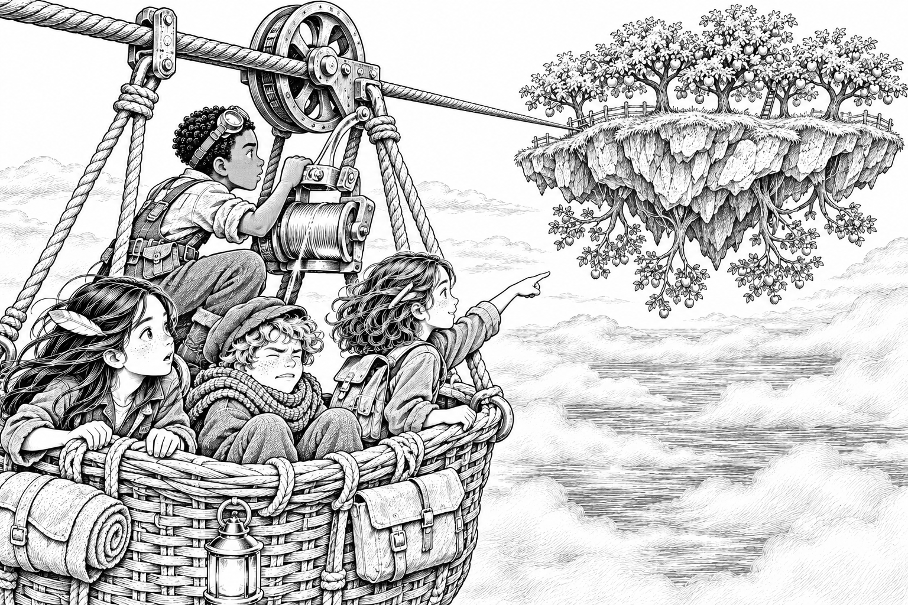
The Ropewalk station was a wooden platform at the top of the tallest tree on the edge of the Canopy. A thick cable ran from it out across the Slack, sagging in a long curve, to a rocky island that floated in the air.
The Upside-Down Orchard.
It was the strangest thing Mara had seen yet. On top of the rock grew ordinary orchard trees, round and green. But underneath, hanging from the bottom of the rock, there were more trees, upside down, with their roots in the stone and their branches pointing at the sea, heavy with golden fruit. Tiny people moved among them, upside down too, as if that were normal.
A wicker basket, big enough for four, hung from the cable by a wheel. Next to it, in a chair, sat a Chainman with a clipboard and a flask of tea.
“Ropewalk’s closing,” he said, without getting up. “Nobody crosses after two. Surveyor’s orders. Too close to the fade.”
It was ten to two.
They went back down the ladder and huddled behind a tree.
“Too close?” Mara whispered. “It doesn’t fade till three.”
“He’s being careful,” said Tavi. “They’re all careful. That’s the whole point of them.”
“We need him away from the basket,” said Idris. “Just for a minute. I can work the brake. I watched how it goes.”
Tavi grinned for the first time in hours. “Leave him to me.”
He walked off between the trees and disappeared. A moment later, from far down the hillside, came a voice. It was Tavi’s voice, but it sounded as if it was coming from the bottom of the slope, and it was shouting.
“Help! I’ve dropped my lantern! Somebody help! There’s a fire!”
The Chainman jumped up, spilling his tea. “Fire?” In the Canopy, fire was the worst thing there was. He scrambled down the ladder and ran towards the voice.
Tavi popped back out from behind the next tree, panting. “The leaves bend it,” he said. “You just have to know which way to aim.”
“That’s brilliant,” said Idris.
“I know,” said Tavi, and for once he didn’t look like he was bluffing.
They climbed into the basket. Idris pulled the brake lever back, and they rolled off the platform and out into the air.
The Canopy dropped away behind them. Below, the Slack stretched silver in every direction, slowly breathing. The wind pulled at their hair. Bea held her binoculars tight. Tavi sat in the bottom of the basket with his eyes shut.
“You all right?” said Mara.
“Don’t like open Slack,” said Tavi, eyes still shut. “Fell in when I was five. Don’t tell anyone.”
“Who would we tell?” said Idris.
Halfway across, the basket began to slow down. The cable sagged lowest in the middle, and they had to start climbing up the other side.
“There’s a second lever,” said Idris. “For going uphill. I think.” He grabbed it and yanked.
There was a loud crack.
The basket stopped. Then it began, slowly, to slide backwards down the cable.
“Idris!”
“The brake pin’s snapped!” He was on his knees, staring at the wheel. A metal pin as long as his finger had broken clean in two. “I pulled too hard. I didn’t check. I...”
They were sliding faster. The cable creaked. Far below, the Slack waited.
“Thread,” said Mara, and pulled out the spool. Her hands were shaking.
Idris took it. This time he didn’t rush. He held the two halves of the pin together, exactly lined up, and wound the silver thread round the break: one turn, two, three, tight and neat. The thread glowed. When he unwound the last turn, the pin was whole. He jammed it back into the brake and pulled the lever gently, and the basket juddered to a stop.
Nobody breathed.
Then the basket began, slowly, to climb.
“Sorry,” said Idris. “I should have looked first.”
“You fixed it,” said Bea.
“I broke it first.”
Mara measured the thread against her ruler later. A hundred and sixty-five centimetres. She didn’t say anything about it.
The basket bumped onto the Orchard’s landing stage at a quarter past three. Mara looked back at the cable as they climbed out.
It was grey.
Not the whole of it, not yet. But behind them, out over the Slack, the thick rope had gone pale and thin, like something in an old photograph. The wheel squeaked on the empty basket as the cable sagged lower. Bit by bit, it was fading into the air.
They watched it go. At four o’clock, the last grey strand vanished, and the basket dropped silently into the Slack.
Mara opened the map with cold fingers. The Ropewalk was gone. The Orchard sat alone, a floating island with only one road left on it: an iron bridge, drawn like a chain, leading straight to the Surveyor’s Tower.
“We can’t go back,” said Idris.
“No,” said Mara. Her plan had been to ask Amma Oduya, then come straight back across before four. It had seemed so sensible. So sure.
“Then we’d better find Amma Oduya,” said Tavi. “And hope she likes visitors.”
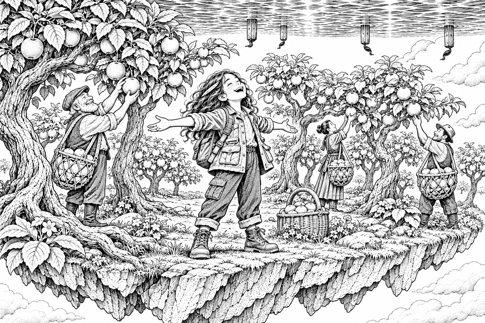
The top of the Orchard looked almost ordinary. Neat rows of trees, a wooden cider press, a stone farmhouse with smoke coming from its chimney. The only odd thing was that, at the edge of the grass, the world simply stopped. Beyond it was sky.
A girl of about fourteen was standing right at the edge with a basket on her hip. As they watched, she stepped off.
Mara shrieked.
The girl didn’t fall. She tipped forward, swung round the lip of the rock as easily as going round a corner, and walked away underneath it, upside down, swinging her basket.
“It’s fine,” said Tavi, who looked as if he didn’t think it was fine at all. “Underneath, down is up. Everyone knows that.”
“I don’t,” said Idris.
Mara went first, because her plan had brought them here. She shuffled to the edge, took a breath and stepped over.
For one horrible moment, her stomach turned over like a pancake. Then her feet were on rock, and the rock was down, and the sky was underneath her, and the sea was above her head like a silver ceiling. Her hair, which should have been hanging towards the water, lay on her shoulders as usual.
All around her, the upside-down trees grew out of the stone, their branches heavy with fat golden fruit. Pickers moved between them in rope nets, laughing and calling to each other.
“Oh,” said Mara. It was the only word she had.
One by one, the others came over the edge. Idris whooped. Bea’s mouth fell open, and stayed open. Tavi came last, green-faced, and sat down at once.
“There’s a whole sea up there,” he said faintly. “Up.”
A fruit dropped from a branch beside Mara. It fell towards the rock, landed at her feet and rolled.
“Tumbler,” said a voice. “Try it. It’s rude not to.”
The voice belonged to the oldest woman Mara had ever seen. Older even than the toll-keeper. She stood very straight, with a stick carved like a branch, a wrapped headscarf, and so many bracelets that she jingled when she breathed.
“Amma Oduya,” said Tavi, scrambling up and bowing.
“Tavi Sallow,” said the old woman. “Grown. And on my Orchard, with Edie Marrow’s map in that girl’s jacket. Yes, the mirrors told me.” She looked at each of them. “Well. Eat your tumbler.”
Mara bit it. It tasted like an apple that had been told a good joke.
They sat in Amma Oduya’s kitchen, which was on the top side, the right way up, and drank hot tumbler juice. On the dresser, propped against a jug, was one of the Surveyor’s notices. Someone had written on it in neat handwriting:
The Orchard will be stilled at its ripest. Every fruit perfect, for ever. No frost. No blight. No one leaving. A. C.
“He wrote to you?” said Mara.
“He writes to me every year.” The old woman’s mouth twisted. “He knows what a harvest costs. He knows the young ones are leaving for the Market, one by one. He thinks he’s being kind.”
“Is he?” said Bea, very quietly.
Amma Oduya looked at her for a long time and didn’t answer.
So Mara asked her question. Where had Edie and the Surveyor learned to make maps? Under the water, behind the stars.
“The Observatory,” said Amma Oduya at once. “Hesper’s Observatory, before it flooded. Old Hesper was the last true Chartmaker. Edie and Ansel Crane were her apprentices. Clever as cats, the pair of them. And the dome was painted with stars inside, all over. Behind the stars. That’ll be it.”
Idris looked at Mara. Mara looked at the table.
It was the Observatory all along. She’d been right to check, she told herself. She’d needed to be sure. But it didn’t feel like being right. It felt like a whole lost day.
Later, while the others helped the pickers, Mara went back to the underside alone and lay on the rock looking up at the sea. A fat black bird flew past beneath her, upside down, which was to say the right way up.
“Cormorant,” said Bea, lying down next to her with her binoculars. “Look. There’s a whole row of them.”
Far off, between the Orchard and the Surveyor’s Tower, a line of old wooden posts stuck up out of the silver water. Nine of them. On top of each post, a cormorant stood with its wings spread out to dry.
“What are those?” Mara asked a picker in the nearest net.
“Hesper’s Pier,” the picker said. “She started building it, years back. Posts first. Then she died, and it never got finished. Nobody’s ever walked it. You’d have to be mad.”
“Cormorants only roost where it’s steady,” said Bea thoughtfully. “They like to dry their wings without wobbling. Those posts must go right down.”
Mara found the posts on the map: nine tiny dots, with no line joining them and no name. She would never have noticed them if she hadn’t seen the real ones first. She didn’t know why it mattered. She drew them in her sketchbook anyway.
When she climbed back up to the top side, the sky was going orange, and Amma Oduya was standing at the kitchen door, looking east.
Along the iron bridge from the Tower, lanterns were coming. Four of them. Swinging. Coming closer.
“Chainmen,” said Tavi.
Amma Oduya didn’t turn round.
“I was told,” she said, “to keep you here.”
Nobody moved.
“How long?” said Idris.
“The Chainway’s forty minutes, end to end,” said Amma Oduya. “They’re halfway.”
Mara’s mind raced, the way it did, looking for a plan. There was no road off the Orchard except the one the Chainmen were on. There was nowhere to hide on a floating rock that they wouldn’t find. And the old woman standing in the doorway had been promised a perfect harvest for ever.
Bea touched her arm and nodded towards the farmhouse stairs.
Two teenagers, the girl with the basket and a boy who looked like her brother, were carrying bags down. Quietly. Glancing at the door. The girl had a ribbon tied round her wrist: blue and orange, the same patchwork colours as Tavi’s scarf.
“They’re packing,” Bea whispered.
Tavi saw it too. Then he looked at Amma Oduya’s stick. Tied round the top of it, almost hidden by her hand, was the same blue-and-orange ribbon.
“That’s a Market trade-ribbon,” he said. “You trade with the Night Market. You let them come here. Even now.”
“Every week for sixty years,” said the old woman.
“And your grandchildren want to go with them,” said Bea. “For good. Don’t they?”
Amma Oduya’s knuckles went white on her stick.
Mara understood then. It was like a puzzle piece turning the right way round. The old woman didn’t want a perfect harvest. She wanted her grandchildren to stay. And the Surveyor had promised that, in the stillness, nobody would ever leave.
Mara thought about Nan on the harbour steps. About the small, terrible thought she’d squashed flat. Nan would never get any worse.
“He promised my nan too,” she said. “In a way. He’s putting my whole town on his Chart. My nan’s forgetting things. In the stillness, she’d never forget anything else.” She swallowed. “But she’d never remember anything new, either. She’d never laugh at a new joke. And your grandchildren would stay. But they’d never choose to stay. They’d never choose anything, ever again.”
Amma Oduya looked at her for a long time. Out on the Chainway, the lanterns swung closer.
Then the old woman turned to the teenagers on the stairs.
“Efua. Kwame. Fetch the Drop.”
✦ ✦ ✦
The Drop was a big rope basket for lowering fruit from the underside to boats waiting on the Slack below. It hung from a pulley at the very tip of the rock, upside down, which meant it was really right side up, and Mara stopped trying to think about it.
“Market fruit-boat comes at moonrise,” said Amma Oduya. “Captain Wim. Tell him I sent you. Tell him he owes me for last year’s tumblers.”
“What will you tell the Chainmen?” said Mara.
“That four rude children stole my fruit and ran off over the edge.” She almost smiled. “It’s true. You haven’t paid for that tumbler.”
Mara hugged her. It was like hugging a tree with bracelets.
They climbed into the basket. Kwame and Efua let the rope out, hand over hand, and the Orchard rose away above them. The basket swung down through the dark towards the Slack, which was black now and glittering with moonlight.
A little boat with a single lamp was waiting. A huge man in an oilskin hat caught the basket, swore, read the note Amma Oduya had pinned to Tavi’s scarf, and swore again.
“Children,” said Captain Wim. “She sends me children. Get in. Sit down. Don’t touch the tumblers.”
They sat among crates of fruit as the boat slid out into the open Slack. Tavi gripped the side and stared straight ahead. Mara unfolded the map under the lamp.
The Orchard was there. The Chainway was there. Four little specks of Chainmen were there, reaching the Orchard and stopping.
But there was no speck for the boat. And none for them.
“We’re not on a road,” said Mara. “So he can’t see us. Out here, nobody can see us.”
“That’s why the Market likes the open Slack,” said Wim. “Can’t chart what doesn’t stay put.” He pulled on the tiller. “Hold tight. Breath’s coming in.”
“The breath?” said Idris.
Bea had been watching the water. “The Slack goes up and down,” she said. “Like the tide at home. It was low this afternoon and it’s getting higher now.”
Wim looked at her as if she’d surprised him. “High breath at seven, low breath at one, morning and night. And for an hour either side of low, it lies dead still. The Hush, we call it. Any other time, the currents’ll pull you to pieces if you don’t know them.”
He knew them. The little boat slipped and turned through the dark, and the currents tugged at it like hands, and never quite got hold.
After an hour, there were lights ahead. Not one or two. Hundreds. Lanterns strung between masts, swaying on the water, a whole floating town of them.
“The Night Market,” said Tavi. It came out almost as a whisper.
As the boat bumped against the nearest deck, Mara saw a woman standing at the top of the gangplank. She was tall and straight, with a ginger braid and a ring of keys at her belt. Her arms were folded.
Tavi stood up very slowly.
“Hello, Mum,” he said.
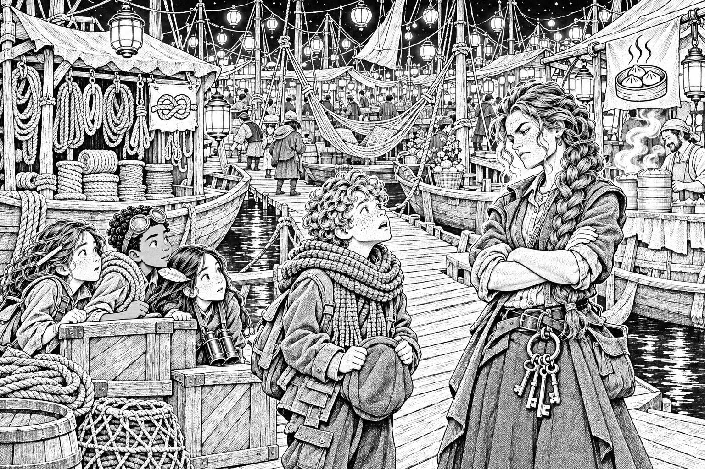
The Night Market was a hundred boats lashed together, deck to deck, with planks between them. That made streets that rocked gently under your feet. Lanterns swung from every mast. There were stalls selling rope, lamps, fish, spices, spoons and music boxes, and one that seemed to sell nothing but buttons. It smelled of woodsmoke and frying dough.
Tavi’s mother, Saskia, did not hug him. She looked at him for a long time and then said, “You’ve grown. You’ve got soot on your face. And you’ve brought trouble.”
“I’ve brought friends,” said Tavi.
“Same thing, tonight.” She looked at Mara. “The Surveyor’s hunting us already. And now he’s hunting you. If his Chainmen follow you here...”
“They can’t,” said Mara. “We weren’t on a road. He couldn’t see us.”
Saskia looked at her more carefully. “Hm,” she said. “Eat first. Then talk.”
They ate lantern dumplings: little parcels of dough fried crisp and stuffed with something spicy, so hot you had to juggle them. There was a rule about buying them, Tavi said. You had to pay the cook a compliment before you were allowed to bargain.
“Your dumplings are the best in two worlds,” said Idris, and he meant every word. The cook gave him an extra one for free.
Afterwards, a gentle man with coils of rope over both shoulders came and sat with them. He had Tavi’s freckles and Tavi’s grin, only slower.
“Joss,” he said, shaking Mara’s hand. “Tavi’s dad. Rope-maker.” He saw Edie’s pen sticking out of Mara’s pocket and went still. “Is that a tide-pen?”
Mara showed him. He turned it over in his big hands.
“Dry as a bone,” he said. “I’ve got tide-ink. A little. We use it for marking rope lengths.” He looked at Mara. “Do you want it filled?”
Mara hesitated. Ro’s voice: Whatever you draw, he gets. But a pen that worked might matter. You never knew.
“Yes, please,” she said.
Joss filled it from a tiny stoppered bottle. “That’s all I’ve got. Enough for a line about as long as your arm.” He handed it back. “Two rules about tide-ink. One: if you put it on a copy, like that map, it goes straight to his Chart.”
“Ro told us.”
“Two.” He held up a finger. “It only sets on a true line. If you draw a road exactly where it really is, the ink sticks. Draw it anywhere else, even a little bit wrong, and it runs off like rain off a window.” He smiled. “That’s why the Market’s never been on his Chart. We never stay where we’re drawn.”
Mara wrote it in her sketchbook, word for word. Ink only sets on a true line.
“And if the Market gets scattered?” said Tavi suddenly. “If Chainmen come?”
Joss looked at his son. “You remember the Scatter Rule?”
Tavi recited it like a nursery rhyme. “If the Market breaks, it mends at Gull Stack, noon the next day.”
“Good lad,” said Joss softly.
✦ ✦ ✦
They slept in hammocks strung between two masts, rocking gently. Mara lay awake listening to the water.
“Bea?” she whispered. “You awake?”
“I keep thinking about Kit,” Bea whispered back. “My brother. He’s only a baby. He’s learning to clap. What if he’s still... what if I never see him clap?”
Mara didn’t know what to say. So she reached out of her hammock, and found Bea’s hand in the dark, and held it until they both fell asleep.
✦ ✦ ✦
In the morning, over sweet porridge, they had a vote.
“I think we should go home,” said Idris. He said it quietly, staring into his bowl. “Bellbridge is still open till twelve. Captain Wim could take us. And then we get help. Grown-ups. My mum builds things. Your dad...”
“I want to go home too,” said Bea. Her voice was small but steady.
Tavi said nothing. He looked as though he’d been punched.
Everyone looked at Mara.
Her mind did what it always did. It made a list. We are four children. The Observatory is a long way away. Roads are closing. We nearly fell into the Slack. We nearly got caught. Grown-ups would know what to do. It was a sensible list. It was a sensible plan.
“Okay,” she said. “We go home. We get help. We come back.”
Tavi got up and walked away down the deck without a word.
Captain Wim agreed to take them, grumbling. “Clapper’s Landing, east end of Bellbridge, by half past ten. Then you run. Bridge starts to fade at eleven.”
They set off at eight, along the edge of the big middle island, with the Canopy’s dark trees on one side and the open Slack on the other. Tavi sat at the very front of the boat with his back to everyone. Nobody knew what to say to him.
The marsh came into view, flat and silver, stretching away south. In the distance, Bellbridge, a long line of tiny houses, was still glinting in the sun.
Mara was looking at Bellbridge. Idris was looking at Bellbridge.
Bea was looking at the marsh.
She lifted her binoculars. Lowered them. Lifted them again.
“Stop the boat,” she said.
Captain Wim didn’t hear her.
“Stop the boat!” said Bea, loudly enough that Wim jumped and let go of the tiller. “There are children on that island. And it’s sinking.”
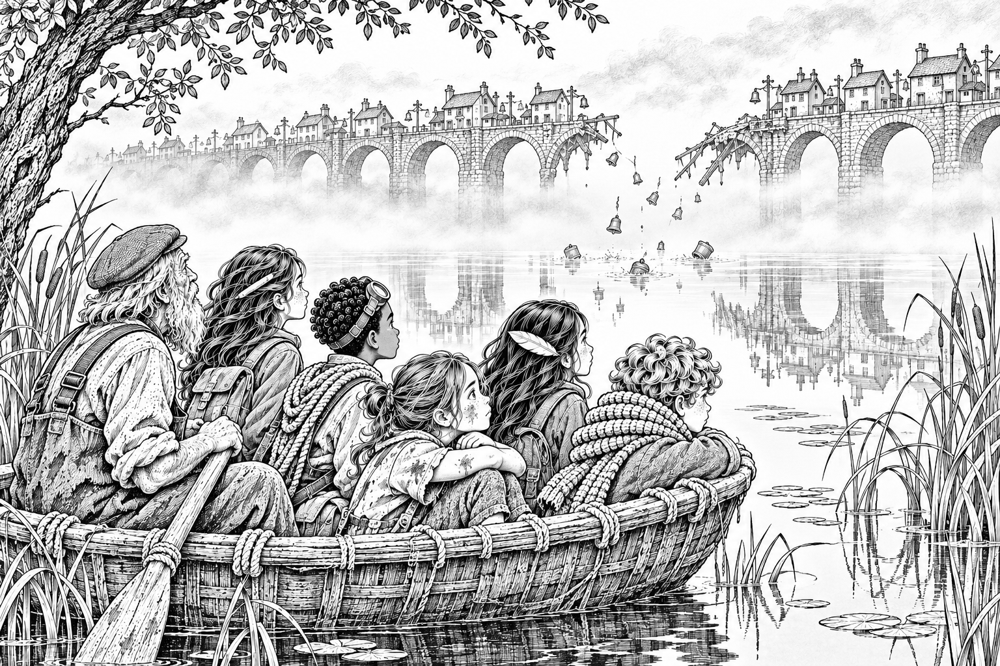
Through Bea’s binoculars, Mara saw it clearly.
In the middle of the marsh was a small island made of woven reed-mats, with round reed huts on top. Half of it was black and smoking. The other half was tilting, slowly, into the water. On the high side, a group of people was huddled together: an old man in waders, two women, and three children, the smallest of them no more than seven.
“Heron Holm,” said Wim. “Glassers live there. Chainmen must’ve burned the mats last night. Burnt reed doesn’t float.”
“Then go and get them!” said Idris.
“Can’t.” Wim jabbed a thick finger at the water. “That’s the Glasswater. Shallow as a puddle in places and deep as a well in others, and it all looks the same. Take my boat in there, I’ll run aground and lose her. And the Chainmen’ll come back to look at their handiwork. I’m a Market man. I don’t get seen.” He looked away. “I’m sorry. I am. I’ll get you to the bridge.”
Mara opened the map. There was Bellbridge, still glowing bright. On the far side of it was Lantern Quay, and the Lamp Road, and home. Dad. Nan. It was ten o’clock. If they went now, they would make it.
And there was Heron Holm, with no road to it at all.
She looked up. Bea was looking at her. Idris was looking at her. Even Tavi had turned round.
“Wim,” Mara said. “Can we borrow your coracle?”
The coracle was a round little boat, like half a walnut shell, tied to the stern. Wim stared at her.
“If you go in there,” he said slowly, “you’ll miss the bridge. You know that? There’ll be no getting home after noon. Not by Bellbridge. Not by anything.”
“I know,” said Mara. Her voice shook. She let it. “But they’re sinking now.”
Idris was already untying the coracle. Bea was already climbing in. Tavi looked at the open water, went pale, and climbed in after her.
Wim swore. Then he threw them his longest pole and a coil of rope. “I’m not waiting,” he said roughly. “I can’t. But I’ll tell the Market what you did.”
✦ ✦ ✦
The Glasswater was the most beautiful and the most frightening place Mara had ever been.
The water was so still it was like glass. Every reed, every cloud, every bird was reflected in it perfectly. Mara couldn’t tell where the reeds ended and the reflections began. Ahead of them, an island rose out of the water, green and lovely, with trees on top.
“Make for that,” said Idris. “It’s closer to the Holm.”
“No,” said Bea. “Look up.”
There, high in the sky, floated the Upside-Down Orchard. The lovely green island in the water was its reflection.
Idris’s mouth fell open. “That’s horrible.”
“There’s more,” said Bea. She was leaning over the side, watching. “See the water-boatmen? The little bugs that skate? They only skate on water. Where there are reeds underneath, near the top, they don’t go. And look at the heron.” A grey heron was stepping slowly through the shallows, lifting each foot high. “It only steps where it’s firm. It knows.”
“So we follow the bugs,” said Mara, “and avoid where the heron walks.”
She had her pencil out. As Bea called, “Bugs left, heron right,” Mara drew the safe channel in her sketchbook, a wiggly line between the shallows. Tavi stood in the middle of the coracle with the pole, his face white, pushing them along the line she drew. Idris knelt at the front, rope ready.
Halfway there, Tavi pushed the pole into soft mud and it stuck. He pulled. There was a crack, and the pole split along its length.
Tavi stared at it in horror.
“Give it here,” said Idris. He didn’t grab it. He held out his hand, and Tavi passed it over. Idris lined up the split, wound the silver thread round it slowly, a long careful spiral, and the wood knitted together. It took a lot of thread.
“Sorry,” said Tavi.
“Mud’s not your fault,” said Idris. “Keep going. You’re doing brilliant.”
Tavi swallowed and kept going.
At half past ten, they reached Heron Holm.
The old man in waders caught the rope Idris threw and tied it fast. His name was Ezra. The smallest child was his granddaughter, Pim, who had a gap in her teeth and mud up to her knees, and who looked at the four of them as if they had come down from the moon.
“The mats went up in the night,” said Ezra. “We’ve been bailing since dawn. Nobody came. We thought nobody would.”
The coracle only held four at once. So they took the Glassers off in turns: Pim and one of the women first, with Mara and Tavi rowing them to a firm reed bank that Bea had spotted. Then back for the others. The holm tilted further with every trip. On the last trip, as Ezra stepped down into the coracle, the reed-mat island gave a long sigh and slid under the glassy water.
They sat on the reed bank, ten of them, wet and breathing hard.
Then, across the marsh, the bells of Bellbridge began to ring.
Not a tune. Not the lost-road toll. All twenty-six bells at once, every one of them, from the great black Anchor to the tiny silver Zephyr, a huge tumbling crash of sound. We’re still here. We’re still here.
Mara looked at her watch. Eleven o’clock.
Through Bea’s binoculars, they watched Bellbridge fade.
It started at the middle. The little houses went pale, like a drawing left out in the sun. Then grey. The washing lines vanished. The window boxes. And still the bells kept ringing, though there was hardly any bridge left to hold them.
Then, one by one, the bells began to fall.
They dropped into the Slack without a splash, silver and bronze, turning over and over as they fell. Anchor. Barley. Candle. Drum. Each one rang a last note as it went. Soon there were fewer bells ringing. Then three. Then one. Then only the little silver Zephyr, ringing on and on by itself in the empty air.
At twelve o’clock, it stopped.
Mara opened the map. Bellbridge was gone. Lantern Quay sat alone on its island, cut off from everything. The Lamp Road still glowed beyond it, faint and gold, and there was no way left to reach it.
Nobody said anything for a long time. Bea cried quietly into her sleeve. Idris stared at the water with his jaw clenched. Tavi sat with his arms round his knees. Pim, who didn’t understand, held Mara’s hand.
Mara thought about Dad. About the note under the till. About back by half six.
And then she thought about the people on Heron Holm, and how they would be at the bottom of the marsh now if the four of them had gone home.
She didn’t say anything wise. She couldn’t think of anything wise. She just took her pencil and the map, and where the Flooded Observatory lay half-sunk in its lagoon, she drew a careful circle round it. A whole circle, except for one small gap.
“We’re not going home,” she said. “Not yet. We’re going to stop him.”
One by one, the others looked up.
For a while, nobody could eat. Then Ezra unwrapped a parcel of smoked eel, and it turned out that being sad made you hungry after all.
Mara sat down next to Tavi on the reed bank.
“I’m sorry,” she said. “About the vote. You were the only one who wanted to keep going, and we all just... went the other way.”
Tavi shrugged. “You wanted to see your family. That’s allowed.” He tried a grin. “Anyway, you’re stuck with me now. No bridge. You’ll have to listen to all my stories. I know four hundred.”
Nobody laughed. The joke fell flat on the reeds and lay there.
Tavi stopped grinning. He said, plainly, in a voice Mara hadn’t heard him use before, “I’m going to the Tower. With you or without you. My mum and dad are out there. Ro’s on her island on her own. I’m not doing jokes about it any more.”
“With us,” said Idris.
“With us,” said Bea.
Mara nodded. Her circle with its little gap was still drawn on the map round the Observatory, and she found that she didn’t want to rub it out.
✦ ✦ ✦
Ezra knew the way to the Observatory. Of course he did. The Glassers had lived in the marsh for longer than anyone could remember. The two women and the other children set off to stay with cousins in the deep marsh. Ezra and Pim came with the crew.
“Marsh Pole Line’s quickest,” said Mara, pointing at the map. It was a dotted line from where Heron Holm used to be, straight across the lagoon to the Observatory. “Two hours. It doesn’t close till six.”
Ezra shook his head. “It’s one of his roads. You walk on his roads, he sees you. That’s how the Chainmen found the Holm. Someone took the Pole Line to visit us.” He jerked his thumb at the reeds. “We go the old way.”
“How long’s the old way?”
“Three hours. Maybe four.”
Mara opened her mouth to argue. Two hours was better than four. Two hours was obviously better. Then she remembered the Canopy, and the bees, and all the time she’d spent being sure.
“Okay,” she said. “The old way.”
Ezra looked surprised, and then pleased.
The old way was made of reeds.
Bundles of them, tied tightly and laid side by side across the shallows, so that you could walk on them as if on a springy floor. The reeds were the strangest Mara had seen: pale and clear, almost like glass. When the wind blew, they chimed softly against each other, a sound like a hundred tiny spoons in a hundred teacups.
“Glass-reed,” said Pim proudly, walking beside Idris. “We make new paths every spring. And when the old ones sink, we make more.”
“And they’re not on the map,” said Mara, checking. They weren’t. Neither were the six of them.
“Never have been,” said Ezra. “Never wanted to be.”
“Then why is he burning them?” said Bea. “Moss Haverly said he never cared about reeds before.”
Ezra walked for a while before he answered. “Started this summer,” he said. “Chainmen came with torches and burned every reed way they could find. Never bothered with us before, not in sixty years. Like he suddenly needed them gone.” He spat into the water. “Can’t draw ‘em, so he burns ‘em.”
Mara wrote that down. Can’t draw them, so he burns them. She underlined it. Then she sat looking at it while they walked, because she had a feeling it was important and couldn’t work out why.
Pim had attached herself to Idris and wouldn’t let go. He showed her how to tie a bowline, a knot that made a loop that never slipped.
“The rabbit comes out of the hole,” he said, “goes round the tree, and back down the hole.”
Pim tied it perfectly the first time.
“That’s brilliant,” said Idris. “Took me a week.”
“You’re nice,” Pim told him seriously. “You fix things.”
Idris went red. “Sometimes I break them first.”
“That’s all right,” said Pim. “Then you get to fix them twice.”
Bea walked at the back, listening to the reeds. Once she stopped them all with a hand. A long reflection of the floating Orchard lay across the water ahead, so real that you wanted to walk on it. Ezra nodded at her approvingly and led them round it.
The afternoon went by. At five o’clock, Mara looked at the map. The Marsh Pole Line was going grey, fading out over the lagoon. Within the hour, it would be gone. If they had taken it, they would be on it now.
The reed path ended at a low wall of old stone. Beyond it, across a stretch of still water, rose a great dome. It was cracked across the top like an eggshell. Half of the building had sunk into the lagoon, so that water lapped at its upper windows.
But one window, high up near the top of the dome, was lit.
“Someone lives there,” whispered Bea.
They rowed across in the coracle, two at a time, and tied up at a stone balcony that had once been on the second floor.
The door had a sign nailed to it. GO AWAY.
Mara knocked.
“Can’t you read?” shouted a voice from inside.
“Yes,” said Mara. “We need help.”
“Everybody needs help. Go and need it somewhere else.”
The door flew open. A furious old man stood there in a faded grey coat, patched at the elbows, with a wild white beard and binoculars round his neck. Mara stared. It was a Chainman’s coat. Old and worn, but a Chainman’s coat.
“Children,” the old man said in disgust. Then he saw Ezra, and his face changed. “And Glassers. What’s happened?”
“They burned the Holm,” said Ezra.
The old man shut his eyes. When he opened them, he stepped aside. “Fine. Come in. Wipe your feet. Don’t touch anything.”
His name was Sorrel Penn. He lived in three dry rooms at the top of the drowned Observatory, full of books, telescopes and bird feeders. On the windowsill, a row of small grey-and-white birds were eating seed.
“Arctic terns,” said Bea, before she could stop herself. “They fly from one end of the world to the other. Further than any other bird.”
Penn turned round slowly. “And how do you know that?”
“I count seabirds. At home. There are terns there too, in summer.” Bea pointed. “That one’s got a ring on its leg.”
“I ringed her,” said Penn. “Six years ago.” He looked at Bea differently after that. Then he sighed and said, “I suppose you’d better eat.”
Supper was pickled samphire and ship’s biscuits, which were so hard that Idris had to soften his in his tea. Penn watched them eat with his arms folded.
“You were a Chainman,” said Mara.
“For forty years.” He touched the faded coat. “I measured every road in the Fold. Helped him draw them, all neat and true. I believed in it. Everyone safe. Everyone home.” He looked at Ezra. “Then this summer, he sent us to burn the reed ways. I said no. So here I am.”
“Why does he want everything still?” Mara asked. “Really?”
Penn was quiet for a long time.
“He had a little brother,” he said at last. “Pip. Ansel was twelve and Pip was eight. One morning, Pip came running in, shouting that he’d seen a new island drifting past. He wanted to go and look. There was a way out to it, a way nobody had drawn, made of old rafts. Ansel said no, wait, it isn’t safe. Pip went anyway.” Penn looked into his tea. “The way drifted apart. They never found him.”
Nobody said anything.
“Ansel’s spent sixty years making sure nothing like that ever happens again,” said Penn. “Every road on his Chart. Every road steady. Nobody wandering off. And now this.” He waved at the window, at the whole Fold. “Everyone still, for ever. Nobody ever lost again.”
Mara looked down at her hands.
She knew that feeling. Wanting everything to stay where you’d put it. Wanting a plan so perfect that nothing could ever go wrong and nobody could ever get hurt. She had felt it every single day since Nan came to live with them.
She hadn’t known she had anything in common with the Surveyor. She didn’t like it at all.
“We need to get into the bottom of the dome,” she said. “Behind the stars.”
Penn raised his eyebrows. “Do you, now.” He went to the window and pointed down into the dark water inside the great broken building. “The old star room’s down there. Hesper’s workroom’s behind it, so they say. It’s underwater most of the day. There’s a float-lift. Hesper built it to go up and down with the Slack. But you can only reach the star room at low breath.”
“One o’clock,” said Bea. “In the morning.”
“In the morning,” agreed Penn.
“And how do we get through, once we’re there?” said Idris.
Penn snorted. “You’ll find out. And don’t expect a key. Hesper never used keys, and neither did her apprentices. Keys get lost. Ansel always locked his doors with words.”
“Words?”
“Say the right word to the door, and it opens. Say the wrong one, and it doesn’t.” He shrugged. “That’s all I know. Go to sleep. I’ll wake you.”
They slept in a heap of blankets on the floor of Penn’s library. Pim curled up next to Idris like a puppy. Ezra snored.
Mara lay awake, thinking about a boy called Pip running down to the water to see a new island. Then she thought about Nan, telling her about the Palace and the dancing and Edie, again and again, as if every time was the first time.
At half past twelve, Penn shook her shoulder.
“Up,” he said. “The water’s going down.”
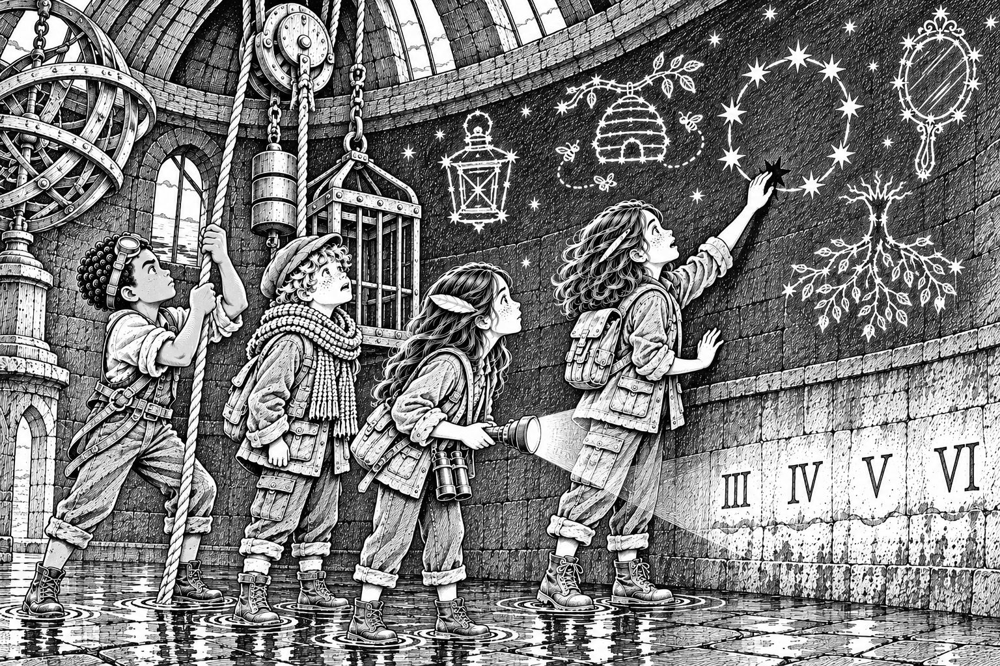
They went down into the dark with the yellow torch.
The float-lift was a wooden platform in an iron cage, hanging inside the dome from heavy chains. On the side was a rack of iron weights, each one stamped with a number, and a painted sign: BALANCE BEFORE YOU DESCEND.
“It’s a seesaw,” said Idris at once, examining the chains. “We go down, the weights go up. If we’re heavier than the weights, we drop too fast and smash. If we’re lighter, we don’t move at all.” He looked at the numbers. “These are in stones. Old weights. We have to match ourselves.”
“Mum says I’m four stone,” said Bea.
“I’m about five,” said Idris.
“Four and a half,” said Mara.
Tavi said, “I don’t know. Nobody’s ever weighed me. I’m probably very light. Like a feather.”
“You ate six dumplings,” said Idris.
They worked it out together: eighteen stone of children, more or less, and the torch, and the rope. Idris loaded the weights one at a time, checking the chains as he went. Not rushing. Mara watched him and didn’t say anything.
“Bea,” he said. “When?”
Bea was shining the torch on a ring of numbers painted on the wall. The water level was creeping down past them. “It’s nearly at the bottom mark,” she said. “There. Now. The Hush is starting.”
Idris let off the brake. The lift sank smoothly through the dark, past the waterline, and down.
They came to rest on a stone floor, wet and shining. Bea swung the torch round.
They were in a round room, and every inch of its curved wall was painted with stars. Not ordinary stars. Clusters of gold stars, joined by fine silver lines, with names painted beside them in old curly letters. The Lantern. The Hive. The Hanging Tree. The Mirror.
“Constellations,” said Tavi.
Mara walked slowly round the wall. Something about it itched at her, the way a map did when it had a mistake in it. The Lantern was on the left. The Hive was above it. The Hanging Tree was on the right…
“It’s the Fold,” she said suddenly. “Look. It’s the map. Only backwards, like in a mirror. The Lantern’s Lantern Quay. The Hive is the Canopy. The Hanging Tree’s the Orchard. The Mirror’s the marsh.”
“And that’s us.” Idris pointed. A cluster of stars in the shape of a dome, low down, near the floor. The Lamp of Hesper.
The dome-shaped stars made a circle. Except they didn’t, quite. There was one star missing from the ring. A small gap.
Mara put her finger on the empty space. The stone was cool and smooth. She thought about Nan, and Edie, and Tavi’s story.
Leave a gap for the wanderers.
She pressed.
With a low grinding sound, a section of the painted wall swung inwards.
Behind it was a small round room, dry as a biscuit tin. There was a desk with an inkstand, and charts rolled up in racks. On the wall was a brass plate, green with age, with writing on it. And, pinned beside it with an old drawing pin, was a ragged triangle of paper.
Mara’s heart jumped. She knew the edge of that paper. She’d looked at it a hundred times.
“It’s the corner of the map,” she said. “The torn bit. Edie left it here.”
She read the brass plate aloud by torchlight while the others crowded round.
There was a long silence.
“Say the last one again,” said Idris.
Mara said it again.
“So,” said Tavi slowly, “if there’s a road. A real one, between two islands. And it’s not on his Chart...”
“Then the Stilling can’t finish,” said Bea. “And it breaks. For ever.”
“That’s why he burned the reed ways!” Mara almost shouted it. “Can’t draw them, so he burns them! He’s getting rid of every road he can’t draw. That’s why he never started it before. Edie’s road. The Lamp Road. It was never on his Chart. He couldn’t finish the Stilling while it was there. So this summer he found it and drew it. And then he could begin.”
“Then we need a road,” said Idris. “Any road. That he hasn’t drawn.”
“A living road,” said Bea. “What does living mean?”
Mara unpinned the triangle of paper. On the back, in the spiky handwriting, Edie had written one more line.
A way is a way only when someone walks it, end to end.
“It has to be real,” said Mara. “Someone has to actually walk it.”
She took out the silver thread. The tear on her map was long, as long as her hand, and she knew it would cost a lot. She did it anyway. She laid the corner in its place and wound the thread along the tear, slowly and carefully. Idris held the paper flat and Bea held the torch. When she lifted the last of the thread away, the map was whole.
The missing legend was there now, all its little symbols explained. And the lagoon around the Observatory was drawn properly at last. So was the place where the old Pole Line had run, out to the marsh.
Mara measured the thread afterwards. Sixty centimetres left.
For a moment, all four of them stood in Hesper’s dry little room and grinned at each other like idiots. Tavi started laughing first. Then all of them were laughing, in a drowned building, in the middle of the night, because for the first time since Friday they knew what to do.
Something cold touched Mara’s ankle.
Water. Seeping under the secret door.
“It’s coming back,” said Bea, horrified, shining the torch on the floor. “It’s early. It’s not meant to be this early.”
“The Hush is over!” said Tavi.
Mara grabbed something from the desk on the way out without even looking at it. Then they ran for the lift.
They made it back up with the water lapping at their shoes. Penn hauled them out of the cage, one by one.
In the library, by lamplight, they told Ezra everything.
“A road he hasn’t drawn,” Ezra said slowly. “Between two islands. Walked end to end. And still there at three o’clock.”
“Can you make one?” said Mara. “Out of reeds? From here to the marsh?”
Ezra thought about it. “Rafts,” he said. “Reed rafts, tied together, staked to the bottom. Across the lagoon, where the old Pole Line used to go. My cousins are out in the deep marsh. They’ve got reeds. If Pim fetches them...”
“Can we hide it?” said Bea. “So he can’t see it?”
“Lay cut reeds over the top. From the air it’ll look like more marsh.”
So they built it.
Pim ran off along the hidden reed ways and came back an hour later with six cousins and great bundles of glass-reed on their backs. They worked by the light of Penn’s lamps and Mara’s torch. The Glassers tied the reeds into rafts, as quick as knitting. Idris lashed the rafts together with Wim’s long rope and his own clever knots. Tavi and Bea drove stakes into the soft bottom of the lagoon to hold each raft still. Mara stood on the balcony with the map and her sketchbook, directing.
By half past four, there was a road across the lagoon. Ezra walked it end to end, from the Observatory steps to the edge of the marsh, and back again.
“There,” he said. “That’s a living way.”
It was so hidden that, even from the balcony, Mara could hardly see it.
But it moved.
The Hush was long over. The breath was coming in now, the water rising towards high breath at seven, and the current was getting stronger. Mara watched the rafts tug against their stakes. One stake leaned. Then another. Pim was out on the middle raft with an armful of reeds, laughing.
Mara’s stomach turned over.
The way drifted apart. They never found him.
“It’s not steady enough,” she said. “What if it pulls apart? With Pim on it? With anyone on it?”
“It’ll hold,” said Ezra. “We’ll put more stakes in.”
“But what if it doesn’t?”
She was already reaching into her pocket. Edie’s pen. Full of Joss’s tide-ink.
“Mara,” said Bea.
“Recorded roads are steady,” said Mara quickly. She could hear herself, too fast and too sure. “They don’t drift. Everyone says so. If I draw it, it’ll hold.”
“But he’ll see it,” said Bea. “Ro said. Whatever you draw, he gets.”
“Edie’s note said he only holds what HE has drawn,” said Mara. “Not what I’ve drawn. If I draw it, it’s mine.” She looked at Idris. “Steady’s better. Isn’t it? You’re the one who knows how things hold.”
Idris looked at the rafts dragging at their stakes. He hesitated. Then he nodded. “Steady’s better.”
“Mara, please...” said Bea. But her voice was small again, the way it used to be. And Mara was already bending over the map.
She drew the line exactly where the rafts lay, from the Observatory steps to the marsh edge. It was the most careful line she had ever drawn. The tide-ink flowed from the pen, dark green and shining, until there was no more ink at all.
The line set. It was true.
For about a minute, nothing happened. Out on the lagoon, the rafts stopped tugging. They lay perfectly still on the water, steady as stone.
“See?” said Mara, and let her breath out.
Then the line on the map began to go pale.
Mara stared at it. Not now. Not yet. It couldn’t...
Grey. The colour of tea with too much milk.
“He’s rubbing it out,” said Tavi, in a horrified whisper. “He saw it. He’s undoing it.”
“Get them off!” yelled Idris. “Everyone off the rafts!”
The road was fading. As it faded, it stopped being steady, and it stopped being anything at all. The stakes leaned and popped out. The ropes slackened as if the knots were dissolving. The rafts began to drift apart in the rising current.
Glassers ran for the ends. Ezra was shouting. And out on the middle raft, Pim was still standing with her arms full of reeds, looking puzzled, as the raft spun slowly away from the others.
Then it tipped, and she went in.
Idris was already running along the balcony with his blue rope. He threw it. It fell short. He hauled it back and threw again, and this time it landed across the raft beside her. Pim grabbed it, just as Idris had shown her, and wrapped it round her wrist.
“Bowline!” Idris shouted. “Rabbit out of the hole!”
Pim, coughing, gasping, tied a bowline round herself in the water.
Tavi had jumped into the coracle. Open water, deep and dark and moving, and he paddled out into it anyway, white-faced and grim. Bea and Idris hauled on the rope. Between them, they dragged Pim to the coracle and Tavi pulled her in.
By six o’clock, everyone was back on the balcony, soaked and shivering and alive.
The rafts were gone. Every one of them, scattered and sinking across the lagoon, with all the Glassers’ reed harvest tied onto them. Ezra stood looking at the empty water and didn’t say a word.
The pen was empty. The line on the map was gone.
And the Surveyor knew exactly where they were.
Mara couldn’t look at anyone. Least of all at Bea.
“Mara,” said Penn quietly from the window. He passed her his binoculars.
At the mouth of the lagoon, riding in on the rising breath, came three grey boats with Chainmen in their bows.
Penn didn’t waste a second.
“Coracle. Now. All of you.” He was already pulling on his old grey coat and buttoning it to the neck. “Go out the back way, into the reeds. Ezra knows.”
“What about you?” said Mara.
“I’m an old Chainman in an old Chainman’s coat.” He straightened it. “I’ll invite them in for tea. I’ll show them my terns. I’ll be very, very slow about it.” He bent down so his eyes were level with Mara’s. “Listen to me. He’ll be at the Long Glass all day now. The great telescope at the top of his Tower. He can see half the Fold through it. Anything he sees, any road you make, he’ll draw it true and wipe it out. Do you understand? Anything he can see.”
Then he pushed them out of the back door.
They went in two loads, the coracle low in the water. Ezra and Pim and the cousins slipped away across the hidden reed ways. Behind them, Mara heard the bump of a boat against the front balcony, and men’s voices, and Penn’s voice, loud and cheerful: “Visitors! How lovely! Mind the step, it’s slippery. Have you met my terns?”
They paddled hard. The breath was still coming in, the water rising, the current pulling. Tavi was in the front, his knuckles white on the paddle, saying nothing.
They were nearly at the reeds when the coracle hit something under the water. There was a horrible scraping crunch. Water began to pour in through a long split in the bottom.
“Stake!” said Idris. “One of ours. From the rafts.”
He already had the thread out. There was barely enough room to kneel, and the water was round his knees, but he held the split edges together and wound the silver thread along them, quick and careful. The wood knitted. The water stopped.
“How much is left?” said Mara.
Idris held up the spool. It looked very thin.
Then Bea, leaning out to fend off a reed bank, slipped. Her binoculars swung on their strap, caught on a broken stake and snapped free. They hit the water with a small plop and were gone.
Bea stared at the place where they had disappeared. She didn’t say anything. She just sat back down.
When Mara looked back, the three grey boats were leaving the Observatory. In the bows of the middle one sat an old man in a faded grey coat, with his hands tied in front of him. He wasn’t looking at the Chainmen. He was looking at the reeds where they were hiding, steadily, as if to say: Go on.
✦ ✦ ✦
The reed hide was a little hut of woven reeds, hidden deep in the marsh, where Glassers waited to watch birds. It was dim inside even in daylight, and when Ezra let the flap fall shut it was completely dark.
They sat in the dark, wet through. Nobody said anything.
Mara put her hand in her jacket pocket to find the torch, and touched something cold and round.
She’d forgotten. The thing she had grabbed from Hesper’s desk without looking. She pulled it out and felt it with her fingers: heavy brass, smooth, with a lid that clicked. A compass. On the lid, scratched in small letters, were two initials. She ran her thumb over them in the dark.
A.C.
“It’s his,” she said. “Ansel’s. From when he was an apprentice.”
Tavi’s voice came out of the dark. “It’s dark in here,” he said. “Properly dark.”
He unhooked the lantern. Mara held out the compass. The thread of light flickered.
And a boy’s voice filled the hide, high and breathless and full of joy.
“Ansel! Ansel, look! A new island! It’s drifting right past, come on, there’s a way out to it, come and see! It’s moving! Come ON!”
Then silence. The candle had burned down past another mark.
Nobody spoke. Mara held the compass and thought about a little boy shouting from the shore, and a big brother who said wait, and how the big brother must have heard those words in his head every day for sixty years.
“He just wanted to see it,” whispered Bea.
Mara thought about Penn, going away in a grey boat with his hands tied. About Pim, under the water, holding on to a rope. About the Glassers’ rafts, scattered, and their harvest, gone. About Bea saying please and nobody listening.
She’d done that. All of it. Because she’d been so frightened of something going wrong that she’d made something go wrong.
And it was worse than that. Penn had told them the truth. Any road they made, the Surveyor could see through his great telescope. And anything he could see, he could draw. If they built another road in the marsh, he’d see it and wipe it out, just like the rafts. There was no way to hide a road from someone who could see the whole Fold.
The plan was gone. Their only plan.
Mara found the map in her jacket. It was damp and smudged at one edge, where the water had soaked in, but she could still read the border. Eight marks left.
She held it out in the dark until it bumped into Idris’s arm.
“You keep it,” she said. “I can’t be trusted with it.”
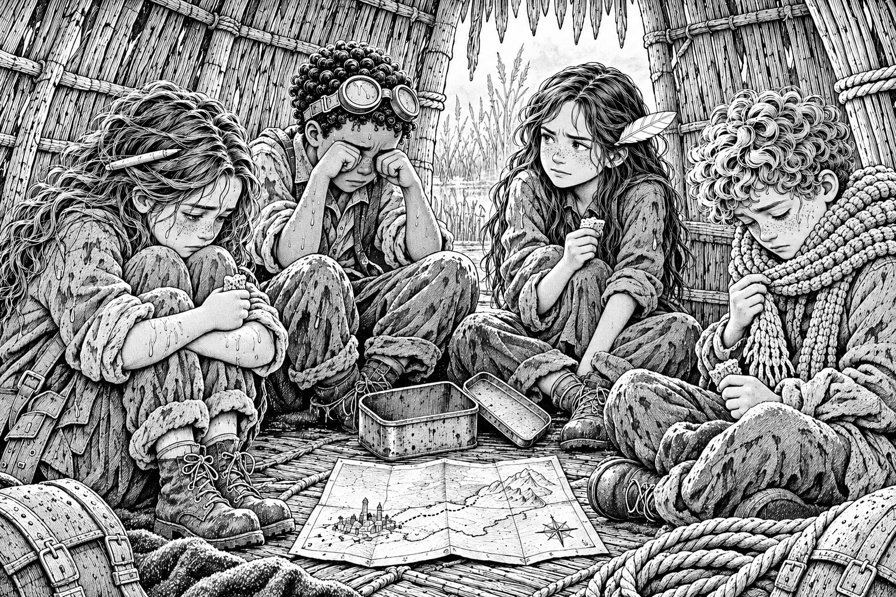
Idris didn’t take it.
He didn’t push it away, either. He just didn’t take it. After a while, Mara put it down on the reed floor in the middle of the four of them, and nobody picked it up.
Ezra lifted the flap a little to let the grey morning in. Then he took Pim outside, quietly, and left them alone.
Bea opened her flapjack tin. There were four pieces left, small and squashed, and her folded note to Kit sitting on top of them. She gave everybody one piece. They ate them slowly, because they were the last.
“I can’t fix this,” said Idris.
He said it to the floor. His voice was wobbly.
“I always think I can fix anything. Mum says I’d try to fix the weather. But I can’t fix this. I don’t even know where to start. I don’t know how.” He rubbed his eyes hard with the heels of his hands. “There. I said it.”
Tavi was picking at a patch on his scarf.
“Before this week,” he said, “I’d never been past Bellbridge. Not once. I told Ro I knew the Canopy. I told you I knew it. I made it up. Everything I know about the Fold is stories.” He swallowed. “And I’m scared of open Slack. So scared I can’t breathe. And my mum doesn’t want me, and I don’t know if I want her, and...” He stopped.
Mara looked at her hands.
“When I saw the gulls stop,” she said, very quietly, “over Wrenmouth. When I knew my nan would be still for ever. There was a bit of me that thought: good.” The words came out in a rush, as if they’d been waiting. “Because she’d never get any worse. She’d never forget me. She’d never forget the way to the bathroom. She’d always be my nan, exactly like she is now.”
Nobody said anything.
“That’s what he wants,” Mara whispered. “I’m just like him. I wanted everything to stay put. That’s why I drew the line. I’m exactly like him.”
She waited for someone to say no, you’re not. Nobody did. And then Bea stood up.
She didn’t stand up slowly or quietly. She stood up so fast that her head bumped the reed roof.
“No,” said Bea. Loudly. Louder than Mara had ever heard her. “No. Stop it. All of you.”
They all stared at her.
“Idris, you fixed the basket. And the boat. And you threw the rope and saved Pim. Tavi, you got the guard away at the Ropewalk and you paddled out on open Slack when you were so scared you couldn’t breathe. That’s not stories. That’s you. And Mara...” Bea’s face was pink, but she didn’t stop. “You made a mistake. A bad one. But you’re not like him. He’d never sit in a hut and say sorry. He’d never even think he’d done anything wrong.”
She sat down again, breathing hard.
“I said please,” she said, more quietly. “On the balcony. And you didn’t listen. That’s true. But I’m saying it now, and you’re listening now. So. We’re not stopping. We have six hours.” She looked at the map. “Five and a bit.”
There was a long silence.
“Okay,” said Idris. His voice was steadier. “Okay.”
“What do we do?” said Tavi.
“We make a list,” said Bea. She looked at Mara. “You’re good at lists.”
Mara took out her sketchbook. Her hands weren’t quite steady, but she wrote.
They looked at it together.
“It’s a lot,” said Tavi.
“It’s not enough,” said Idris. “Number four. He can see everything.”
Mara stared at number four. He can see everything. Anything he can see.
She thought of Ro, standing at the rail at the top of the great lamp tower, the whole harbour blazing with light around them. Ro pointing straight down. The pool of black at the bottom of the tower, where the tower’s own shadow fell and the light couldn’t reach.
“It’s always darkest,” Mara said slowly, “under the lamp.”
And she stopped.
“Say that again,” said Idris.
“It’s always darkest under the lamp. Ro said it. It’s a lamplighters’ saying.” Mara’s words were speeding up now, falling over each other. “A lamp lights up everything around it. Except right underneath. Right at the bottom of the tower, there’s a shadow, because the light shines out, not down.”
“The Long Glass is at the top of his Tower,” said Tavi slowly.
“So he can see everywhere,” said Mara. “Except straight down. Except the bottom of his own Tower.”
She grabbed the map and spread it on the reed floor. There was the Upside-Down Orchard, floating on its crag. There was the Tower, on its cliff. And between them, close beneath the cliff, so small she’d almost missed it on Friday, was a little row of nine dots.
“Hesper’s Pier,” said Bea.
“It goes from under the Orchard,” said Mara, “to the bottom of the Tower. Under the Orchard, it’s hidden by the rock. Under the Tower, it’s hidden by the Tower. It’s never been walked, so it’s not a road yet. So it’s not on his Chart. And it’s the one place he can’t look at.”
“And the posts are steady,” said Bea. “The cormorants.”
Idris was frowning, but in a good way. The way he frowned at a machine. “We’d need rope. Lots. From post to post, and from the Orchard down to the first one. Three or four hundred metres. And then we walk it, end to end. Then it’s a living road.”
“And then he finds it anyway,” said Tavi. “Because he’s clever. Penn said. Sooner or later he looks down.”
“Then it can’t be a road he can draw,” said Mara.
They looked at number six on the list. Ink won’t set on a road that isn’t where it’s drawn.
“Joss said it,” said Tavi. “The Market’s never on his Chart because we never stay where we’re drawn.”
“So we don’t stay where we’re drawn,” said Idris. His eyes were shining. “We don’t tie the rope tight to the posts. We loop it round, so we can flip it from one side of a post to the other. If he draws the road on the north side of the posts, we swing it to the south side. Then it isn’t where he drew it, and the ink runs off. He draws it again, we swing it back.”
“How will we know where he’s drawing?” said Bea.
Everyone looked at Mara.
“Someone has to be up there,” she said slowly. “In the Tower. Watching the Chart. And signalling down.” She pulled the yellow torch out of her pocket. “With this.”
She wrote it down while she thought:
“It should be me,” she said. “I know the map best. I know how the Chart works. And...” She looked down. “It was my mistake. I should be the one who goes up.”
Nobody argued. Mara noticed that, and was grateful.
Then she did something she had never done before. She turned the sketchbook round so the others could see it.
“Now find the holes,” she said. “In my plan. Everything that could go wrong. Please.”
They stared at her.
Then Idris said, “The Chainway. It closes at two. The Orchard’s only held in place by the Chainway. When it goes, the Orchard starts to drift. It’ll pull the whole rope.”
“Then somebody holds the Orchard end,” said Tavi. “In a boat. Pulling against it.” He went pale. “On open Slack.”
“And the current,” said Bea. “The Hush ends at two. After that, the breath comes back. It’ll pull at everything. We have to be across the posts before then.”
“And if the Chainmen cut the rope,” said Idris, “it isn’t a road any more.” He looked at the spool in his hand. There was hardly any silver left on it. “I could mend a little bit. Once. Maybe.”
“And we need the Market,” said Tavi. “Their rope. Their boats.” He looked at the light through the reed flap. “If the Market broke last night, the Scatter Rule says Gull Stack. Noon.”
It was a quarter to eleven.
“Can we get there?” said Mara.
“Gull Stack’s a big rock, out in the open Slack, north of the lagoon,” said Tavi. “It’s about an hour. Paddling. On open Slack.” He took a breath. “I’ll steer. I know the currents. Not from going. From the stories. But I know them.”
✦ ✦ ✦
Ezra gave them his own paddle, which was better than theirs, and wrapped the last of the smoked eel in a leaf. Pim hugged Idris round the middle and wouldn’t let go.
“Fix it twice,” she told him.
“I’ll try,” said Idris.
They paddled out of the reeds and into the open Slack. It was wide and silver and bright, with nothing to hold on to in any direction. Tavi steered from the back. His face was grey and set. Every few minutes he said, “Left a bit,” or, “Current’s going to pull. Lean,” and every time he was right.
“You said you only knew it from stories,” said Bea.
“I listened to a lot of stories,” said Tavi.
Just before noon, a tall pillar of black rock rose out of the water ahead, streaked white with seabird droppings. And around its base, one by one, boats were coming in from every direction, with lanterns on their masts. They lashed themselves together, deck to deck, plank to plank, and a market grew out of the water like a town being built in fast motion.
On the biggest boat, at the very front, stood a woman with a ginger braid and a ring of keys at her belt.
She saw Mara first. And her face went hard as stone.
Saskia Sallow didn’t let them step onto her boat.
She stood at the top of the gangplank with her arms folded, and the whole Market stopped to watch.
“We came to help you,” she said. “Wim told us what you did for the Glassers. So we sailed for the lagoon to find you. We were moored at the mouth at dawn, waiting.” Her voice was low and very angry. “And then your ink brought three boats of Chainmen straight past us. We had to break and run in the dark. We lost two boats on the rocks. Old Marta’s boat, with her stall and everything she owned. Children in the water.” She looked at Mara. “We have hidden from him for forty years. And you brought him to us in one night.”
Mara felt every word land.
She had a speech ready in her head. I didn’t know. I thought it would be steady. I was trying to keep Pim safe. All of it was true.
She didn’t say any of it.
“I’m sorry,” she said. “I made a mistake. I drew a line I shouldn’t have, because I was scared. You lost boats because of me. I’m really, really sorry.”
Saskia’s eyes narrowed. She’d expected excuses. She didn’t get any.
“Sorry doesn’t get Marta’s boat back,” she said.
“No,” said Mara. “It doesn’t.”
Then Tavi stepped forward.
He took off his cap. He stood in front of his mother on the gangplank, and he didn’t make a single joke.
“Mum,” he said. “You’re scared. I know you are. It’s not the boats. You’re scared about the children. The Market children. You’re scared about them being out on open Slack when things go wrong. That’s why you sent me to the Quay, isn’t it? So I’d be somewhere safe.”
Saskia’s face changed. Just a flicker.
“We don’t need the children,” said Tavi. “Only grown-up sailors. The children stay here at Gull Stack, where it’s safe. We need rope, and boats, and people who know the currents. That’s all.”
“And why,” said Saskia, “should I risk a single sailor?”
“Because if he wins,” said Tavi quietly, “the Market gets stilled too. Scattered. Like it is now, every boat in a different place. And it never mends. Not at Gull Stack, not at noon, not ever. You’d never get everyone back together again.”
The whole Market was silent. Saskia looked at the boats around her: lashed together, safe, whole. She looked back at her son.
Mara reached into her jacket.
She took out the map. It was damp and smudged and mended with silver thread. It was the most precious thing she had ever held. She’d hardly let go of it since Friday.
She held it out to Saskia.
“You keep this,” she said. “As a promise. It shows every Chainman who walks on one of his roads. If they come, you’ll see them coming. You’ll have time to run.” She swallowed. “I won’t need it. Where I’m going, I’ll be looking at his.”
Saskia looked at the map for a long, long moment.
Then she took it.
“Joss,” she called, without turning round.
Tavi’s dad came pushing through the crowd with coils of rope over both shoulders, and more behind him, carried by others.
“Four hundred metres of Market line,” said Joss, dropping them on the deck. “Best I’ve ever made.” He looked at his son and smiled slowly. “I heard. All of it.”
Tavi turned bright red under his freckles.
“Wim,” Saskia called. “Wim, Petra, the Larsson twins. You’ll take the old fishing boat and the two quick ones. Nobody under sixteen.” She turned back to Mara. “If this fails, I’ll never forgive you.”
“If it fails,” said Mara, “I’ll never forgive me either.”
Saskia almost smiled. Almost.
✦ ✦ ✦
They sailed north as fast as the boats would go. The Hush had begun. The Slack lay flat and still as a mirror, and every sail filled.
The Upside-Down Orchard grew ahead of them, floating on its crag, its trees hanging golden beneath it. Beyond it, on its cliff at the very edge of the Fold, stood the Surveyor’s Tower. Tall and thin, with its domed top, and the long brass shape of the Long Glass glinting in the sun.
Mara looked at it and felt very small.
“There,” said Bea, pointing. “Look.”
The Chainway, the iron bridge from the Orchard to the Tower, was going grey. It was one o’clock. In an hour, it would be gone, and the Orchard would begin to drift.
The boats slid in under the shadow of the crag. It was cool and dark beneath the hanging trees. Above them, an upside-down picker in a rope net stared down in astonishment and nearly dropped her basket.
And in front of them, in the shadow, rising out of the silver water in a long line towards the foot of the Tower’s cliff, stood nine old posts, each with a cormorant on top.
Hesper’s Pier.
Idris pulled the first coil of Market rope over his shoulder.
“Less than two hours left,” said Mara.
ONE HOUR AND FORTY-FIVE MINUTES REMAINING
Idris had drawn the plan on a page of Mara’s sketchbook in the boat. Now he held it up so everyone could see.
“It’s a ferry line,” he said. “Like the Ropewalk, only on the water. One rope, from the Orchard down to the first post, then post to post, all the way to the Tower. We sit in the punt and pull ourselves along it, hand over hand. That’s how we travel it end to end.”
“And the loops?” said Saskia’s sailor, Petra.
“At every post, the rope goes round in a loose loop. Not tied. So someone in a boat can flip it, from the north side of the post to the south side, or back.” He pointed at the twins and Petra. “You three take a post each in the quick boats, and move along as you need to. When Bea shouts south, you flip it south. When she shouts north...”
“We flip it north,” said the twins together.
“Where will I be?” said Bea.
“Middle post. Number five.” Idris pointed. “You can see the Tower window from there. When Mara flashes, you shout.”
Bea swallowed. She would have to shout across the water, loud enough for four boats to hear. She nodded.
They started at the Orchard.
High above them, Efua and Kwame let the Drop basket down from the underside, swinging on its rope. Idris climbed up into it with the end of the Market line, and they hauled him up out of sight. A few minutes later he came down again, grinning.
“Tied off to the Drop pulley,” he said. “That’s the Orchard end. Proper island. Proper start.”
Then post by post, they built it. The sailors rowed the line out. Idris stood in the bows of the punt and looped it round each post, loose and neat, and the cormorants flapped off in disgust one by one. It was hard, slow work. The posts were old and slimy and further apart than they looked. Idris’s palms went red and raw from the rope.
At post nine, the last post, the Market line ran out.
Between the last post and the bottom of the Tower’s cliff was one more gap, about fifteen metres of flat silver water. At the foot of the cliff, half-hidden by weed, Mara saw a rusty iron ring set into the rock. Above it, a narrow stair had been cut into the cliff, zigzagging up into the shadow under the Tower.
“Hesper’s steps,” said Tavi. “Must be. For the pier she never finished.”
Idris unslung Mrs Bello’s blue rope from his shoulder. It looked bright and very ordinary.
“Last bit’s from home,” he said, and tied it to the iron ring with a bowline. Rabbit out of the hole.
It was half past one.
“Now we travel it,” said Mara. “All of it. End to end.”
Tavi didn’t come in the punt. He was going to be at the other end, in Wim’s boat, under the Orchard.
“When the Chainway goes,” he said, “the Orchard will start to drift. Someone’s got to hold it.” He looked out at the open Slack beyond the shadow, flat and silver and endless, and his face went grey. “So I’ll hold it.”
“Tavi...”
“I know.” He tried to grin, and very nearly managed it. “In between’s all right.”
He climbed into Wim’s boat. Mara, Bea and Idris climbed into the punt.
They started at the Orchard end, under the Drop. Hand over hand, they pulled themselves along the rope: to post one, round, on to post two. The punt glided over the still, silent water of the Hush. Above them, the Orchard’s trees hung golden and upside down, and then they slid out from under them, along the line of posts, deeper into the long shadow of the Tower’s cliff.
Post three. Post four. At post five, Bea climbed out onto a little ledge at the top of the post. She wobbled and held on.
“I’m all right,” she said. “Go.”
Post six. Seven. Eight. The cliff loomed over them, black and wet. Mara looked straight up. Somewhere up there, very high, at the top of the Tower, was the Long Glass, looking out over the whole Fold. Looking everywhere except here.
Post nine. Then along the blue rope, the last fifteen metres, and the punt bumped against the bottom of the cliff beside the iron ring.
“Done,” said Idris. His voice shook. “That’s it. End to end.”
“It’s a road,” said Mara. “A living road. And it’s not on his Chart.”
It was ten to two.
They didn’t cheer. There wasn’t time.
At two o’clock, far above them, the Chainway finished fading. They heard it go: a long, groaning creak and then nothing. A moment later, the whole line of rope trembled.
“The Orchard,” said Idris, staring back along the posts. “It’s moving.”
It was. Very slowly, the great floating crag was beginning to turn and slide, pulled by the first stirrings of the breath. The rope tightened from post to post, like a string being plucked. Under the Orchard, Wim’s boat was leaning hard the other way, its sail full, with every sailor hauling on the line. In the stern, a small figure in a blue cap was holding the rope with both hands and his eyes screwed shut.
“Hold on, Tavi,” whispered Mara.
The rope trembled, and held.
“Go,” said Idris. He took Mara’s torch out of her pocket, checked it, and pressed it back into her hand. “Go on. I’ve got this end.”
Mara climbed out onto the rock and started up Hesper’s steps.
The stair went up in zigzags through the cliff, then into a tunnel, then into the base of the Tower itself. It turned into a spiral, round and round, cold and dark, with no windows at all. Mara counted the steps without meaning to. Two hundred. Three hundred. Her legs were burning.
At the very top, the stair ended at a door.
It was made of dark wood, with a brass handle shaped like a compass needle. There was no keyhole. No lock. No bolt.
Mara pushed it. It didn’t move.
From the other side, faintly, she heard the scratch of a pen.
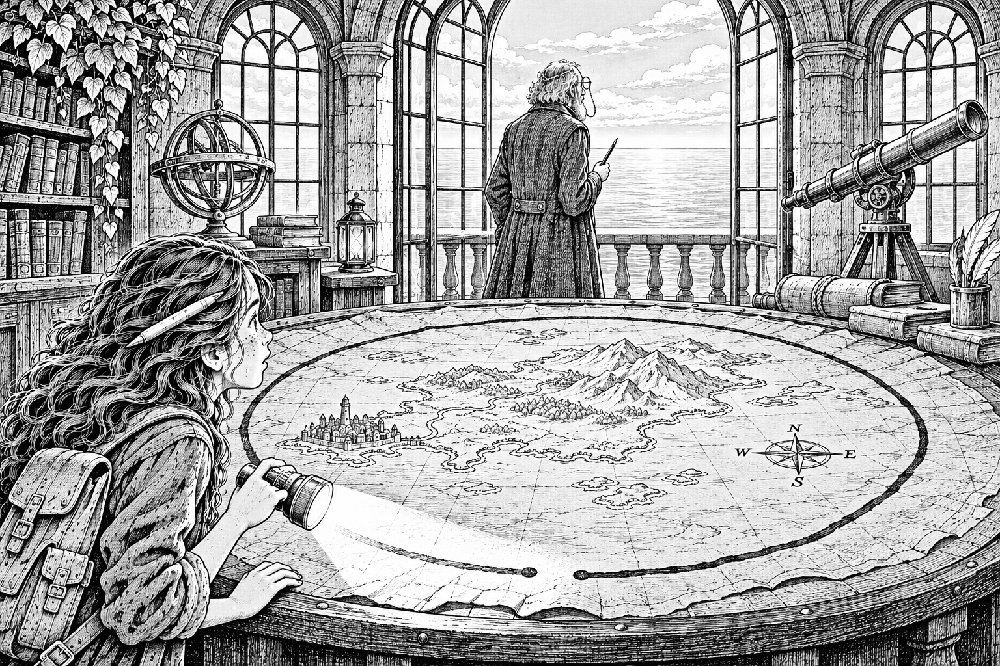
Ansel always locked his doors with words.
Mara stood in the dark at the top of the stairs. She could feel her heart going in her ears. She didn’t know the word. She could try a hundred words, and every one would be wrong.
Then she remembered the lantern.
Tavi had given it to her under the Orchard, before he climbed into Wim’s boat, without saying anything. She unhooked it from her belt now. It was so dark on the stair that she couldn’t see her own hand.
She held the lantern close to the brass handle and opened the shutter a crack.
A man’s voice, quiet and sad and very close, said one word.
“Pip.”
It was the word he said every morning, and every night, when he opened this door. Mara could hear that in it.
The candle burned down past another mark. Two left.
Mara put her mouth near the door. “Pip,” she said.
The handle turned by itself, and the door swung open.
✦ ✦ ✦
The map room was round and full of light.
Tall windows ran all the way round it, looking out over the whole of the Fold: the silver Slack, the islands, the far-off glimmer of Lantern Quay. A door stood open onto an iron gallery. And beyond it, mounted on brass rails, a long telescope pointed out over the sea.
In the middle of the room was a table, round and as big as a pond. On it lay the Great Chart.
It was like Mara’s map, only enormous, and alive. Every island was there, every road shining in green-brown ink. Tiny specks of light crept along them. And round the edge ran the border: seventy-two notches, all joined now into one thick, dark line. Except for one gap, at the top.
One notch. One hour.
Less than one hour.
The man at the telescope turned round.
He was tall and stooped and old, in a long grey coat, with silver hair and round spectacles on a chain. His fingers were stained with ink. He didn’t look like a villain. He looked like somebody’s grandad.
“You’re the girl,” he said. “With Edie’s map.” He looked at the lantern in her hand, then at the door. “And you know my brother’s name.” His voice was gentle and tired. “How is Edie? I drew your town in for her, you know. So she’d be safe. She always was reckless.”
Mara had been ready to shout at him. She found she couldn’t.
“Edie died,” she said. “Six years ago. I’m sorry.”
The Surveyor stood very still.
“My nan was her friend,” Mara went on. “She talks about her all the time. She says Edie was the best dancer at the Palace.”
“She was,” said the Surveyor, after a long time. “She was the best at everything.” He took off his spectacles and wiped them carefully. When he put them back on, his face was calm again.
“Well,” he said. “Then you’ve come a long way for nothing. Go and sit down. It will all be over soon, and then nobody will ever have to be sad again.”
Then he stopped. Mara saw him look down at the Great Chart, and frown.
“You weren’t on any of my roads,” he said slowly. “I’ve been watching. Four children with a map. You vanished in the marsh. And now you’re here, and you didn’t come by the Chainway, and you didn’t come by the Rim.” He looked at her properly for the first time. “You came by a way I haven’t drawn.”
Mara said nothing.
He was at the telescope in two steps, swinging it round the whole Fold, looking, looking. The marsh. The lagoon. The Orchard. The open Slack.
“Nothing,” he muttered. “There’s nothing. Where...”
And then he stopped and stood quite still. Mara watched him think. She could almost see the thought arriving.
“Under the lamp,” said the Surveyor softly.
He went out onto the gallery and leaned over the rail, and looked straight down.
Mara ran after him. Far below, in the shadow of the cliff, she could see it: the thin line of rope running from post to post, out to the hanging Orchard. A tiny figure on the middle post with her face turned up. Three little quick boats waiting.
The Surveyor was already back at the Chart, picking up a long silver pen. He dipped it in a pot of tide-ink. He leaned over the place where the nine dots were, and began to draw a line, careful and exact, along the north side of the posts.
Mara stood in the gallery doorway, where the window faced down to the posts. She held up the torch and pressed the switch.
One flash.
Far below, faint but clear, came Bea’s voice. “SOUTH!”
The Surveyor finished his line and lifted his pen.
The ink didn’t sink in. It sat on top of the paper in a long wet stripe. It shivered. Then it ran, like rain off a window, and puddled at the edge of the Chart.
He stared at it.
“Not where it’s drawn,” whispered Mara.
He looked at her, and then at the torch in her hand, and then at the window. His mouth went thin. He dipped the pen again, and drew, quick and neat, along the south side of the posts.
Two flashes.
“NORTH!” Bea’s voice came up the cliff.
The ink ran.
He drew again. Mara flashed. Bea shouted. The ink ran. Every time he drew the road, it had already moved.
The clock on the wall said a quarter to three.
The Surveyor put down his pen. He stood for a moment with both hands flat on the edge of the table, breathing slowly.
Then he went to a speaking-tube on the wall, pulled out its brass stopper, and spoke into it, quite calmly.
“Pell,” he said. “Take the shears. Go down Hesper’s steps. There’s a rope tied at the bottom. Cut it.”
FIFTEEN MINUTES REMAINING
The Surveyor walked to the gallery door and closed it. Then, one by one, he closed the tall shutters on the windows. The ones that looked down to the posts. The ones that looked out to the sea.
The room went dim, lit only by lamps. Mara stood holding her torch, and there was nowhere left to point it.
“I’m sorry,” said the Surveyor. He meant it. That was the worst part.
He sat down in a chair by the Great Chart, slowly, like a very old man.
“Do you know what I’m offering?” he said. “Not just to the Fold. To you.” He looked at her with his tired, gentle eyes. “Your nan. Edie’s friend. She’s forgetting, isn’t she? I can see it in your face. Every week she loses a little more. One day she’ll look at you and not know who you are.”
Mara’s throat closed up.
“In the stillness,” he said softly, “that day never comes. She’ll be exactly as she is now. Always. She’ll always know you. She’ll never lose another thing.” He spread his inky hands. “Nobody gets lost. Nobody gets left. Isn’t that what you want?”
It was. It was exactly what she had wanted, in that small, secret, terrible part of her. Every night since April.
Mara thought about Nan on the harbour steps, tilting the map to the light. You don’t look at pencil, you tilt it. Nan remembering Edie’s saying from seventy years ago, and forgetting her own cup of tea. Nan laughing at the fish.
If Nan were still, she’d never forget anything else. But she’d never laugh at anything new. Never hold Mara’s hand on the way home. Never tell the Palace story again, even for the hundredth time. It would just be a picture of Nan. Not Nan.
“No,” said Mara.
The Surveyor looked at her.
“I don’t want her to stay the same,” said Mara. Her voice was shaking, and she let it. “I want her. Even if she changes. Even if she forgets me.” She took a breath. “I’ll just have to keep reminding her. That’s all. I’ll draw her maps.”
She took the brass compass out of her pocket and put it on the table in front of him.
“Pip didn’t want to be safe,” she said. “He wanted to see the island.”
The Surveyor looked down at the compass. He didn’t touch it.
Mara turned and ran.
There was a window on the stair. She’d passed it in the dark without knowing: a narrow slit in the stone, high in the wall, looking straight down the cliff. She scrambled up onto the step below it and pressed her face against the cold glass.
Far below, at the bottom of Hesper’s steps, a lanky young man in a grey coat was running down the last zigzag with a pair of shears in his hand.
Mara saw Idris stand up in the punt. Saw him put himself between the young man and the iron ring. Saw the young man push past him, not roughly, and kneel and close the shears on the bright blue rope.
The rope parted. The end flew loose.
Mara’s heart stopped.
But Idris had already grabbed one end, and was reaching for the other. The punt was spinning. He jammed his knee against the iron ring. Mara saw silver glint in his hand. The last of the thread. She saw him hold the two cut ends together, exactly lined up, and start to wind. No rushing. No mistakes.
One turn. Two. Three.
The thread ran out on the last turn. It was exactly enough.
The rope was whole.
And now, faintly, up the cliff, came a voice. Bea’s voice. Not Mara-flash, Bea-shout. Just Bea, on her own, with nobody telling her what to do.
“NORTH! Now SOUTH! Keep going! Don’t stop! Keep it moving!”
She was calling every move herself. She couldn’t see the Chart, so she was keeping the road moving all the time, north, south, north, so it could never be in one place long enough to be drawn.
On the rocks below, the young man stood with the shears in his hand. He lifted them again.
And Bea, on her post, turned and called something to him. Mara couldn’t hear the words. But she saw the young man stop. She saw him look out across the water, west, towards where Bellbridge used to be. She saw his shoulders drop.
He put the shears down on the rock.
Then he knelt beside Idris and took hold of the rope with both hands, and held it steady.
The breath was coming back. Mara could see the current stirring, pulling at the posts. Far away, under the drifting Orchard, Wim’s boat was leaning hard against the line. And a small figure in a blue cap was still holding on.
Mara stumbled back up the stairs into the map room.
The Surveyor was standing over the Great Chart, his pen in his hand. He wasn’t drawing. He was just watching the border.
On the clock, the minute hand moved to twelve.
Three o’clock.
The last notch began to close. A line of dark ink crept along the border towards the place where the other end began. Mara watched it come. Closer. Closer. A finger’s width. A hair’s width.
It stopped.
The two ends of the line lay side by side, so close they almost touched. But they didn’t meet. There was a gap between them, too small to see unless you were looking for it.
A gap for the wanderers.
Then, with a sound like ice cracking on a pond, a split ran out from the gap, right across the Great Chart. Across every island. Across every road. The shining green-brown ink went dull. Then flat. Then it was just ink, ordinary ink on ordinary old paper. The tiny moving specks winked out.
It was just a map.
Outside, Mara felt it more than heard it. The whole Fold breathed out, a long, slow sigh. Through the cracks in the shutters, she saw the islands shift, very slightly, a hand’s width this way or that, like someone turning over in their sleep.
Nobody was still.
The Surveyor sat down in his chair. He didn’t say anything. He reached out slowly and picked up the brass compass. He held it in both hands.
Then he got up, and walked to the window, and opened the shutter, and looked out.
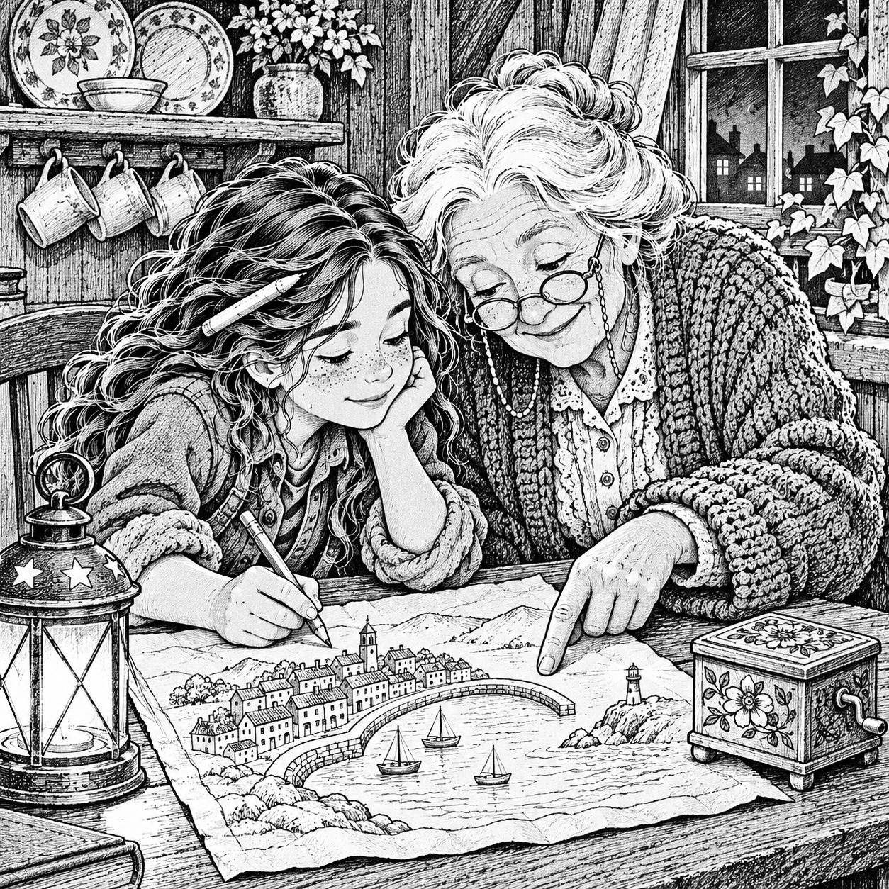
Afterwards, it was Bea who told her what she’d said to the young Chainman.
“I asked him if his name was Pell. And he said yes. And I said, your gran is the toll-keeper on Bellbridge, isn’t she? Because she has the same eyes. And I said, she rang every single bell for you, at the end. All twenty-six. Even the little silver one.” Bea shrugged. “I heard them. I thought he’d want to know.”
Orrin Pell turned out to be Grandma Tull’s grandson. He drove the Chainmen’s sail-cart himself, all the way back along the Rim Road to Lantern Quay. It was a long, rattling wagon with a sail on top that hurtled along the edge of the world. Beside him, in the passenger seat, sat Sorrel Penn, freed from the Tower’s cells with a cup of tea in his hand and a look of enormous satisfaction.
The Surveyor stayed behind in his Tower. When the sail-cart left, he was standing on the gallery, not looking at his Chart. He was looking out at the islands, at the boats, at the Orchard drifting slowly back towards the Canopy.
“What will happen to him?” Mara asked.
“He’ll have to learn to look out of the window,” said Penn. “It’ll do him good.”
✦ ✦ ✦
Before they left, Saskia had come aboard the punt and handed Mara her map.
It was quiet now. No specks. No glowing roads. The border was just a border. But it was still Edie’s map, with Edie’s little fish over Ellery’s, and Mara’s own silver thread holding its corner on.
“You kept your promise,” said Saskia. Then, to her son, more quietly: “So did you.”
She held out her arms. After a moment, Tavi walked into them.
✦ ✦ ✦
Lantern Quay was full of people when they arrived. All the bell-folk were there, crowded in with their bags and boxes, along with the lamplighters and half the Fold. Grandma Tull came out of the crowd and took her grandson’s face in both her tiny gloved hands, and for a long time neither of them said anything at all.
Ro was at the top of the great lamp tower. She came down the ladder so fast she nearly fell off it, and hugged Tavi so hard that his cap came off.
“You went past Bellbridge,” she said into his hair.
“I went everywhere,” said Tavi.
Bellbridge was gone. It would never come back. The bells were somewhere at the bottom of the Slack. But Grandma Tull was already talking about rafts, and ropes, and building something new, and Joss and Wim were already arguing about how.
“Everything changes,” said Ro, watching them. “That’s what keeps it alive.”
At the top of the stone steps, where the Lamp Road began, Mara held out the lantern to give it back.
Tavi pushed it gently back into her hands. “Two marks left,” he said. “Keep it.”
“I can’t...”
“It’s a present. It’s rude to say no to a present. Everyone knows that.” He grinned, but his eyes were shiny. “And you’ll come back. You’ve got a map and a door. I’ll teach you the lamp signal. Two long, one short. It means come and see.”
Mara hugged him. Idris hugged him. Bea hugged him longest of all.
Then the three of them walked back home along the road of light.
✦ ✦ ✦
Halfway across, Mara looked back at the Fold. Then she looked forward, at Wrenmouth.
The fog on Wren Bridge was lifting. She could see it thinning, drifting away up the valley like smoke. Over the harbour, a gull tilted its wings and flew.
Gull Head was full of torches.
Dad was there, and Mrs Bello, and Bea’s mum and Jo with the baby in a sling, and two coastguards, and half of Fore Street. It was twenty to ten on Friday night. The children had been missing for nearly five hours.
Nobody believed them.
Dad held Mara so tight she couldn’t breathe, and then he was so angry he couldn’t speak, and then he held her again. She was grounded until Christmas. Idris was grounded until Easter, because of the lighthouse. Bea’s mum cried and cried, and Kit clapped his hands at all the torches. Bea opened her flapjack tin and gave her mum the note that said I’m all right, and that made her mum cry even more.
The only person who believed them was Nan.
“Edie’s door,” she said, when Mara showed her the map. She ran her finger over the little fish and smiled. “She always said she’d show me one day.”
✦ ✦ ✦
Three weeks later, on a rainy Sunday, Mara sat with Nan at the kitchen table.
On the table was Nan’s old music box. It was blue, with a dancer on top. Nan said Edie had given it to her a long time ago.
Mara closed the curtains and turned off the light, until the kitchen was properly dark. Then she opened the shutter of the echo lantern, just a crack.
Out of the music box came two girls’ voices, young and breathless, laughing so hard they could hardly speak. One of them was saying, “Dot! Dot, stop, I can’t, my feet!” And the other one, Mara knew at once, was Nan.
Nan sat still in the dark. Then she laughed too, the same laugh, seventy years older.
The candle had one mark left. Mara decided she would save it.
Afterwards, they drew a map of Wrenmouth together, in pencil, because Nan said you could always rub out pencil. Nan told her where everything used to be: the Palace, the old ropeworks, the sweet shop with the jars. Mara drew them in, next to where everything was now. Nan forgot some things halfway through, and remembered others, and told the Palace story twice. Mara didn’t mind.
When they drew the harbour wall, Mara drew it round in a long curve. Then, at the very end, she lifted her pencil and left a little gap.
“What’s that for?” said Nan.
“For the wanderers,” said Mara.
The next day, Nan had forgotten all about it. So Mara drew it again.
✦ ✦ ✦
On the last evening before Christmas, Mara was walking home along the harbour when she looked up at Gull Head.
The lighthouse was dark. It had been dark since that Friday night, when Mrs Bello had climbed up and turned it off and locked the door and said a great deal about it.
But now, as Mara watched, high in the lamp room, a light flickered on.
Long.
Long.
Short.
Come and see.
Mara stood still on the harbour front. Then she smiled, and put her hand in her pocket, where she always kept the map now. And she started to walk towards the headland.
THE END
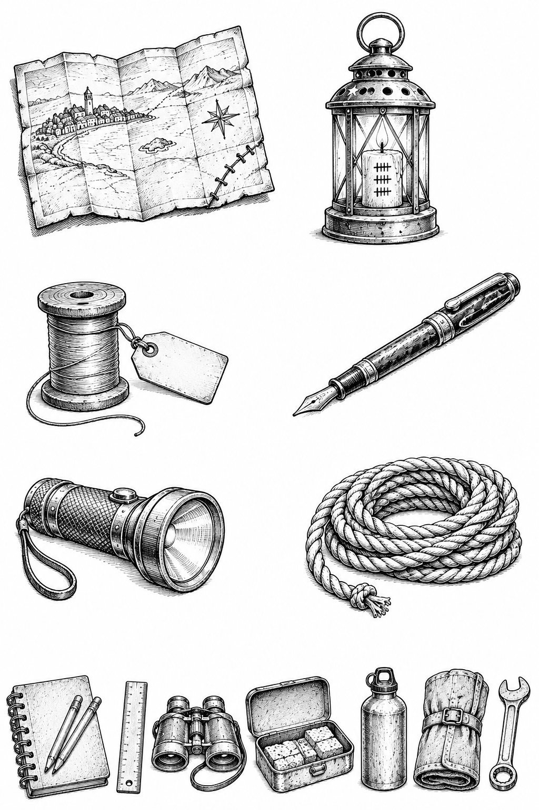
Every good expedition needs the right kit, and needs to know what that kit can’t do.
The Living Map
What it does: Shows every road on the Surveyor’s Chart, and tiny moving lights for anyone travelling along them. With both lamps lit, it opens Edie’s door onto the Lamp Road.
Its limit: It only shows roads that have been drawn on the Chart. Anything off the road is invisible. One corner was torn off and one part is water-stained.
Watch out: Tide-ink drawn on it goes straight to the Surveyor.
The Echo Lantern
What it does: Held close to an object in the dark, it plays back the loudest sound that object remembers, for about ten seconds.
Its limit: It only works in proper darkness, and only once for each object.
Its cost: Each echo burns one of the six marks on its candle.
The Repair Thread
What it does: Wind it round a break in something that isn’t alive, and the break mends.
Its limit: It can’t mend living things, and it can’t replace pieces that are missing. Mends what’s broken. Not what’s lost.
Its cost: The thread is used up as it mends, about a hand-span for every finger-length of break. There were 200 centimetres to start with.
Edie’s Pen
What it does: Draws in tide-ink.
Its limit: Tide-ink only sticks to a road drawn exactly where it really is.
Watch out: Whatever you draw, he gets.
Ordinary Kit A big yellow torch. Twenty metres of blue rope. A spiral sketchbook and pencils. A ruler. Binoculars. A tool roll and a spanner. A flapjack tin. Water bottles. Ordinary things matter. In the end, a rope, a torch and a few centimetres of thread saved the Fold.
Grandma Tull has slipped you another toll token. Use the bells of Bellbridge to work out her message.
THE BELLS OF BELLBRIDGE
1 Anchor · 2 Barley · 3 Candle · 4 Drum · 5 Ember · 6 Fern · 7 Gull · 8 Heron · 9 Iron · 10 Juniper · 11 Kettle · 12 Lark · 13 Moon · 14 Nettle · 15 Oar · 16 Pebble · 17 Quill · 18 Rope · 19 Salt · 20 Tide · 21 Urchin · 22 Vane · 23 Wren · 24 Xylophone · 25 Yarrow · 26 Zephyr
The token:
2 · 5 · 12 · 12 · 19 18 · 9 · 14 · 7 6 · 15 · 18 8 · 15 · 13 · 5
Bonus: Make your own token for a friend. Can they crack it?
It is 9 o’clock on Saturday morning. You are standing at Clapper’s Landing, at the east end of Bellbridge. You need to reach the Flooded Observatory, and you may only travel on roads that are on the Surveyor’s Chart.
Roads and travel times
The Surveyor’s Closure Schedule
Do not be on a road while it is fading.
Questions
The Fold is always changing. Islands drift in from the mist, and new ones are found every year. Now it’s your turn.
Draw your island on the next page, then answer these questions:
Remember: draw your roads in pencil. You can always change them.
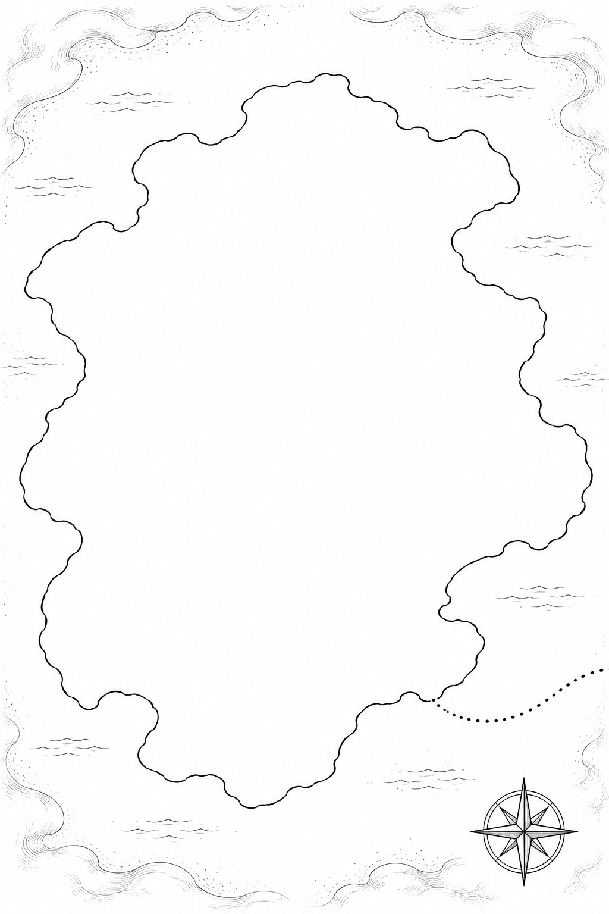
Puzzle 1: 2 = B, 5 = E, 12 = L, 12 = L, 19 = S … The message is BELLS RING FOR HOME.
Puzzle 2: